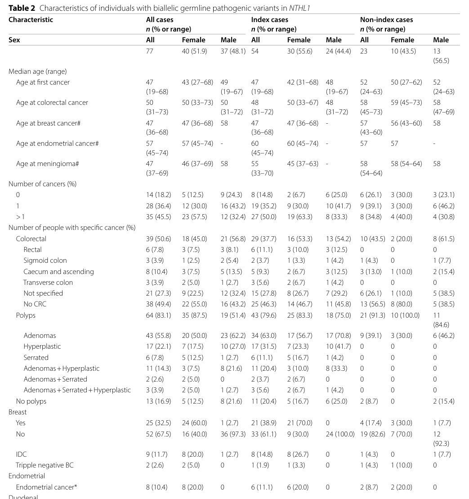

NTHL1-deficiency tumor predisposition syndrome (NTHL1 tumor syndrome, NATS) is an autosomal recessive adult-onset multi-tumor predisposition caused by biallelic germline loss-of-function variants in NTHL1, the bifunctional DNA glycosylase that initiates base excision repair of oxidized pyrimidines. Like MUTYH-associated polyposis, and unlike the Knudson two-hit syndromes, the inherited state is a constitutional caretaker defect present in every cell: unrepaired oxidized cytosine is read as thymine, and somatic cells accumulate C>T transitions at non-CpG sites that make up COSMIC single base substitution signature SBS30. SBS30 dominates the somatic mutational profile of adenomas and of colorectal, breast, endometrial and other cancers from biallelic carriers, and arises de novo in NTHL1-knockout human colon organoids. The clinical picture is attenuated adenomatous polyposis (median about 20 polyps, with hyperplastic and serrated polyps in a minority) with colorectal cancer in about half of reported individuals, breast cancer in about half of affected women, and an extracolonic spectrum including endometrial cancer, meningioma, urothelial carcinoma, duodenal adenomas and cancer, and hematologic malignancy. No tumor has been reported before age 18, which is the basis for surveillance starting at 18 to 20 years. The recurrent allele is c.244C>T p.(Gln82*) in NM_002528.7, reported in older literature as p.(Gln90*). Heterozygous carriers are not this disorder.
Ask a research question about NTHL1-deficiency Tumor Predisposition Syndrome. OpenScientist will conduct autonomous deep research using the Disorder Mechanisms Knowledge Base and PubMed literature (typically 10-30 minutes).
Do not include personal health information in your question. Questions and results are cached in your browser's local storage.
name: NTHL1-deficiency Tumor Predisposition Syndrome
creation_date: "2026-10-13T18:57:45Z"
category: Mendelian
categories:
- Hereditary Cancer Syndrome
- Cancer Predisposition Syndrome
- Gastrointestinal Neoplasia
parents:
- hereditary neoplastic syndrome
disease_term:
preferred_term: NTHL1-deficiency tumor predisposition syndrome
term:
id: MONDO:0100502
label: NTHL1-deficiency tumor predisposition syndrome
synonyms:
- NTHL1 tumor syndrome
- NTHL1-associated tumour syndrome
- NATS
- NTHL1-associated polyposis
- NAP
- NTHL1-related polyposis
- familial adenomatous polyposis 3
- FAP3
mappings:
mondo_mappings:
- term:
id: MONDO:0014630
label: familial adenomatous polyposis 3
mapping_predicate: skos:closeMatch
mapping_source: MONDO
mapping_justification: >-
MONDO:0014630 (OMIM:616415, ORPHA:454840) is the polyposis-named concept
for the same genotype: biallelic germline NTHL1 loss of function. MONDO
keeps it as a separate class under classic familial adenomatous polyposis,
while MONDO:0100502 is the ClinGen-curated tumor-syndrome concept under
hereditary neoplastic syndrome. ClinGen's Lumping and Splitting review
found MONDO:0100502 to be the only disease entity associated with NTHL1,
and the Orphanet record that MONDO maps exactly to FAP3 itself lists
meningioma, breast, endometrial and bladder neoplasms, so the two classes
describe one disease. closeMatch rather than exactMatch because MONDO has
not merged them and places FAP3 under an APC-defined parent whose
mechanism this entry does not share; the decision is surfaced for review
rather than settled here.
description: >-
NTHL1-deficiency tumor predisposition syndrome (NTHL1 tumor syndrome, NATS) is
an autosomal recessive adult-onset multi-tumor predisposition caused by
biallelic germline loss-of-function variants in NTHL1, the bifunctional DNA
glycosylase that initiates base excision repair of oxidized pyrimidines. Like
MUTYH-associated polyposis, and unlike the Knudson two-hit syndromes, the
inherited state is a constitutional caretaker defect present in every cell:
unrepaired oxidized cytosine is read as thymine, and somatic cells accumulate
C>T transitions at non-CpG sites that make up COSMIC single base substitution
signature SBS30. SBS30 dominates the somatic mutational profile of adenomas
and of colorectal, breast, endometrial and other cancers from biallelic
carriers, and arises de novo in NTHL1-knockout human colon organoids. The
clinical picture is attenuated adenomatous polyposis (median about 20 polyps,
with hyperplastic and serrated polyps in a minority) with colorectal cancer in
about half of reported individuals, breast cancer in about half of affected
women, and an extracolonic spectrum including endometrial cancer, meningioma,
urothelial carcinoma, duodenal adenomas and cancer, and hematologic
malignancy. No tumor has been reported before age 18, which is the basis for
surveillance starting at 18 to 20 years. The recurrent allele is c.244C>T
p.(Gln82*) in NM_002528.7, reported in older literature as p.(Gln90*).
Heterozygous carriers are not this disorder.
inheritance:
- name: Autosomal recessive
inheritance_term:
preferred_term: Autosomal recessive inheritance
term:
id: HP:0000007
label: Autosomal recessive inheritance
penetrance: INCOMPLETE
expressivity: VARIABLE
description: >-
Both NTHL1 alleles must be inactivated in the germline. Recurrence risk is
concentrated in siblings of a proband, not offspring, which is why cascade
testing targets sibs. Monoallelic carriers are not at the increased colorectal
tumor risk of biallelic individuals (see genetic notes).
evidence:
- reference: PMID:25938944
reference_title: "A germline homozygous mutation in the base-excision repair gene NTHL1 causes adenomatous polyposis and colorectal cancer."
supports: SUPPORT
evidence_source: HUMAN_CLINICAL
snippet: "All three families showed recessive inheritance of the adenomatous polyposis phenotype and progression to CRC in at least one member."
explanation: >-
The defining family series reports recessive segregation of the polyposis
phenotype in all three families.
- reference: PMID:32239880
reference_title: "NTHL1 Tumor Syndrome."
supports: SUPPORT
evidence_source: OTHER
snippet: "NTHL1 tumor syndrome is inherited in an autosomal recessive manner."
explanation: >-
GeneReviews Genetic Counseling section. Evidence source is OTHER because
GeneReviews is an expert-authored review.
- reference: PMID:32239880
reference_title: "NTHL1 Tumor Syndrome."
supports: SUPPORT
evidence_source: OTHER
snippet: "each sib of an affected individual has at conception a 25% chance of being affected"
explanation: GeneReviews basis for the sibling recurrence risk.
- reference: PMID:32239880
reference_title: "NTHL1 Tumor Syndrome."
supports: SUPPORT
evidence_source: OTHER
snippet: "It is appropriate to clarify the genetic status of apparently asymptomatic older and younger at-risk sibs of an individual who has germline biallelic NTHL1 pathogenic variants"
explanation: GeneReviews basis for directing cascade testing at siblings.
- reference: PMID:32239880
reference_title: "NTHL1 Tumor Syndrome."
supports: SUPPORT
evidence_source: OTHER
snippet: "The cumulative lifetime risk of developing extracolonic cancer by age 60 years has been estimated at 35% to 78%."
explanation: >-
GeneReviews' only quantitative risk estimate, and the basis for
penetrance INCOMPLETE. The wide range reflects small, clinically
ascertained series (see the risk-ascertainment discussion).
- reference: CGGV:assertion_7a612b05-25f2-4e60-90a5-70ad6363c1fc-2022-12-30T180000.000Z
reference_title: "NTHL1 / NTHL1-deficiency tumor predisposition syndrome (Definitive)"
supports: SUPPORT
evidence_source: OTHER
snippet: "NTHL1 | HGNC:8028 | NTHL1-deficiency tumor predisposition syndrome | MONDO:0100502 | AR | Definitive"
explanation: ClinGen classifies the relationship for this MONDO term with autosomal recessive inheritance.
pathophysiology:
- name: Biallelic Germline NTHL1 Loss of Function
conforms_to: "genome_instability_mutation#Genome-Maintenance Defect or Replication Stress"
description: >-
Both NTHL1 alleles carry germline loss-of-function variants, almost all of
them protein-truncating (nonsense, frameshift or canonical splice site); the
recurrent allele is c.244C>T p.(Gln82*). This is a constitutional biallelic
state present in every cell from conception, not a first hit awaiting a
somatic second hit, so the entry does not conform to the germline two-hit
predisposition module.
role: trigger
biological_scale: MOLECULAR
gene:
preferred_term: NTHL1
modifier: DECREASED
term:
id: hgnc:8028
label: NTHL1
genetic_context:
gene:
preferred_term: NTHL1
term:
id: hgnc:8028
label: NTHL1
variant_origin: GERMLINE
allelic_hit_role: BIALLELIC_INACTIVATION
allelic_events:
- NONSENSE_VARIANT
- FRAMESHIFT_VARIANT
- SPLICE_SITE_VARIANT
functional_impact_category: LOSS_OF_FUNCTION
description: >-
Homozygous or compound heterozygous germline truncating NTHL1 variants.
molecular_functions:
- preferred_term: oxidized pyrimidine DNA N-glycosylase activity
term:
id: GO:0000703
label: oxidized pyrimidine nucleobase lesion DNA N-glycosylase activity
modifier: DECREASED
- preferred_term: apurinic/apyrimidinic lyase activity
term:
id: GO:0003906
label: DNA-(apurinic or apyrimidinic site) endonuclease activity
modifier: DECREASED
evidence:
- reference: PMID:8990169
reference_title: "Cloning and characterization of a functional human homolog of Escherichia coli endonuclease III."
supports: SUPPORT
evidence_source: IN_VITRO
snippet: "exhibited DNA glycosylase activity on double-stranded polydeoxyribonucleotides containing urea and thymine glycol residues, as well as an apurinic/apyrimidinic lyase activity"
explanation: >-
The two activities of the wild-type protein (purified recombinant hNTH1)
that the truncating alleles remove; the defect at the variant level is
shown by the in vitro assay of PMID:30552997 below.
- reference: PMID:25938944
reference_title: "A germline homozygous mutation in the base-excision repair gene NTHL1 causes adenomatous polyposis and colorectal cancer."
supports: SUPPORT
evidence_source: HUMAN_CLINICAL
snippet: "In seven affected individuals from three unrelated families, we identified a homozygous germline nonsense mutation in the base-excision repair (BER) gene NTHL1."
explanation: Identifies the homozygous germline nonsense genotype in the families that defined the syndrome.
- reference: PMID:41107869
reference_title: "Tumour spectrum, distinguishing features and management recommendations for NTHL1-associated tumour syndrome: a systematic review."
supports: SUPPORT
evidence_source: HUMAN_CLINICAL
snippet: "Thus far, all but one, reported PVs in NTHL1 are protein truncating variants, suggesting that pathogenic NTHL1 missense variants are a rare cause of NATS"
explanation: >-
Systematic review of 77 reported biallelic individuals; the allelic
spectrum is protein-truncating, consistent with loss of function as the
mechanism.
- reference: PMID:30552997
reference_title: "Defective repair capacity of variant proteins of the DNA glycosylase NTHL1 for 5-hydroxyuracil, an oxidation product of cytosine."
supports: SUPPORT
evidence_source: IN_VITRO
snippet: "The DNA cleavage activity assay showed that the variants of NTHL1, Q90X, Y130X, R153X, and Q287X, but not R19Q, V179I, V217F, or G286S, showed defective repair activity for 5OHU and two other oxidatively damaged bases."
explanation: >-
Biochemical evidence that the truncating alleles, including the recurrent
Q90X (now p.Gln82*), lack glycosylase activity, while several missense
variants retain it.
downstream:
- target: Failure to Excise Oxidized Pyrimidines
description: >-
Without NTHL1 protein, the glycosylase step that recognizes and removes
oxidized pyrimidines does not occur.
- name: Failure to Excise Oxidized Pyrimidines
conforms_to: "genome_instability_mutation#Failure of DNA Damage Surveillance and Repair"
description: >-
NTHL1 is the human homolog of Escherichia coli endonuclease III, a DNA
glycosylase with associated AP-lyase activity that removes ring-saturated
and ring-fragmented pyrimidines (thymine glycol, urea, 5-hydroxyuracil) to
initiate base excision repair. Loss of NTHL1 leaves these lesions in DNA;
5-hydroxyuracil, an oxidation product of cytosine, is miscoding and
templates C>T mutations. Other glycosylases (NEIL1, SMUG1, TDG, UNG2) also
act on 5-hydroxyuracil, which may explain why the resulting mutation rate is
only modestly raised; that explanation is an inference, not a tested claim.
role: central_effector
biological_scale: MOLECULAR
molecular_functions:
- preferred_term: oxidized pyrimidine DNA N-glycosylase activity
term:
id: GO:0000703
label: oxidized pyrimidine nucleobase lesion DNA N-glycosylase activity
modifier: DECREASED
biological_processes:
- preferred_term: base-excision repair
term:
id: GO:0006284
label: base-excision repair
modifier: DECREASED
evidence:
- reference: PMID:8990169
reference_title: "Cloning and characterization of a functional human homolog of Escherichia coli endonuclease III."
supports: SUPPORT
evidence_source: IN_VITRO
snippet: "exhibited DNA glycosylase activity on double-stranded polydeoxyribonucleotides containing urea and thymine glycol residues, as well as an apurinic/apyrimidinic lyase activity"
explanation: >-
Establishes the normal enzymatic function of NTHL1 (purified recombinant
protein), which is what biallelic loss removes.
- reference: PMID:30552997
reference_title: "Defective repair capacity of variant proteins of the DNA glycosylase NTHL1 for 5-hydroxyuracil, an oxidation product of cytosine."
supports: SUPPORT
evidence_source: IN_VITRO
snippet: "5OHU caused an increase of the mutation frequency in human cells, and the C→T mutation was predominant among the 5OHU-induced mutations"
explanation: >-
Shows that an NTHL1 substrate lesion derived from cytosine is mutagenic in
human cells and produces predominantly C>T changes, linking the repair
defect to the transition signature.
- reference: PMID:30552997
reference_title: "Defective repair capacity of variant proteins of the DNA glycosylase NTHL1 for 5-hydroxyuracil, an oxidation product of cytosine."
supports: SUPPORT
evidence_source: IN_VITRO
snippet: "5OHU was excised by NTHL1 as well as four other DNA glycosylases (SMUG1, NEIL1, TDG, and UNG2)"
explanation: Records the substrate overlap with other glycosylases noted in the node description.
downstream:
- target: SBS30 C>T Transition Mutator Phenotype
description: >-
Unexcised oxidized cytosine is copied as thymine at replication, fixing
C:G>T:A transitions.
- name: SBS30 C>T Transition Mutator Phenotype
conforms_to: "genome_instability_mutation#Mutator Phenotype and Chromosomal Instability"
description: >-
Somatic cells of biallelic carriers accumulate C>T transitions at non-CpG
sites, the pattern of COSMIC signature SBS30. The phenotype is a change in
mutation type more than in mutation number: tumors are not hypermutated, and
NTHL1-knockout human colon organoids accumulate base substitutions at about
twice the normal rate with no increase in indels or structural variants.
SBS30 is detectable at comparable proportions in adenomas and carcinomas, so
it is present from the earliest neoplastic stage, and it dominates the
somatic profile of tumors from several organs, which is the molecular
argument that the extracolonic cancers belong to the syndrome rather than
being coincidental. Somatic driver variants in APC, PIK3CA, TP53, PTEN, KRAS
and NRAS, mostly C>T at non-CpG sites, were found in tumors from biallelic
carriers.
role: central_effector
biological_scale: CELLULAR
cell_types:
- preferred_term: intestinal crypt stem cell of colon
term:
id: CL:0009043
label: intestinal crypt stem cell of colon
evidence:
- reference: PMID:25938944
reference_title: "A germline homozygous mutation in the base-excision repair gene NTHL1 causes adenomatous polyposis and colorectal cancer."
supports: SUPPORT
evidence_source: HUMAN_CLINICAL
snippet: "Genetic analysis of three carcinomas and five adenomas from different affected individuals showed a non-hypermutated profile enriched for cytosine-to-thymine transitions."
explanation: First tumor-level evidence of the C>T, non-hypermutated mutator phenotype in biallelic carriers.
- reference: PMID:28912133
reference_title: "Use of CRISPR-modified human stem cell organoids to study the origin of mutational signatures in cancer."
supports: SUPPORT
evidence_source: IN_VITRO
snippet: "Application of this strategy to the cancer predisposition gene NTHL1, which encodes a base excision repair protein, revealed a mutational footprint (signature 30) previously observed in a breast cancer cohort."
explanation: >-
NTHL1 knockout in normal human colon organoids is sufficient to produce
signature 30, establishing causality from the repair defect to the
signature in an otherwise normal genetic background.
- reference: PMID:28912133
reference_title: "Use of CRISPR-modified human stem cell organoids to study the origin of mutational signatures in cancer."
supports: SUPPORT
evidence_source: IN_VITRO
snippet: "As expected, the base substitution accumulation rate in NTHL1KO cells was approximately one-fourth of that in MLH1KO cells but approximately two times higher than in normal cells (Fig. 2A)."
explanation: Quantifies the modest increase in mutation rate that distinguishes this mutator phenotype from mismatch-repair deficiency.
- reference: PMID:28912133
reference_title: "Use of CRISPR-modified human stem cell organoids to study the origin of mutational signatures in cancer."
supports: SUPPORT
evidence_source: IN_VITRO
snippet: "Loss of NTHL1 did not result in increased numbers of INDELs (Fig. 2A) or structural variation."
explanation: Supports the statement that the phenotype is restricted to base substitutions.
- reference: PMID:30753826
reference_title: "Mutational Signature Analysis Reveals NTHL1 Deficiency to Cause a Multi-tumor Phenotype."
supports: SUPPORT
evidence_source: HUMAN_CLINICAL
snippet: "Mutational signature analysis of 14 tumors from 7 organs revealed that NTHL1 deficiency underlies the main mutational process in all but one of the tumors (93%)."
explanation: Shows the signature dominates tumors across organs in biallelic carriers.
- reference: PMID:39793275
reference_title: "Adenomas from individuals with pathogenic biallelic variants in the MUTYH and NTHL1 genes demonstrate base excision repair tumour mutational signature profiles similar to colorectal cancers, expanding potential diagnostic and variant classification applications."
supports: SUPPORT
evidence_source: HUMAN_CLINICAL
snippet: "SBS18+SBS36 and SBS30 were enriched in adenomas at comparable proportions to those observed in CRCs from biallelic MUTYH and biallelic NTHL1 cases, respectively."
explanation: Places the mutator phenotype at the adenoma stage, before malignant transformation.
- reference: CGGV:assertion_7a612b05-25f2-4e60-90a5-70ad6363c1fc-2022-12-30T180000.000Z
reference_title: "NTHL1 / NTHL1-deficiency tumor predisposition syndrome (Definitive)"
supports: SUPPORT
evidence_source: OTHER
snippet: "A specific mutational signature due to a high percentage of somatic C>T transitions (COSMIS Signature 30) in cancer driver genes such as KRAS, APC, TP53, PIK3CA has been identified on tested tumor samples"
explanation: >-
ClinGen evidence summary naming the somatic driver genes hit by the
signature; quoted with its original typo. This is an expert summary of
the primary tumor data, not the data itself.
- reference: PMID:37727376
reference_title: "Combined germline and tumor mutation signature testing identifies new families with NTHL1 tumor syndrome."
supports: SUPPORT
evidence_source: HUMAN_CLINICAL
snippet: "We detected somatic variants in several known cancer driver genes, such as APC, PIK3CA, TP53, PTEN, KRAS and NRAS (Figure 3A). Most somatic mutations were C>T transitions (Figure 3B), predominantly located at non-CpG sites."
explanation: Primary tumor sequencing (two colorectal cancers, one endometrial cancer) naming the drivers hit.
downstream:
- target: Adenomatous Colonic Polyposis
description: >-
Transitions in colonic crypt stem cells initiate multiple adenomas.
evidence:
- reference: PMID:39793275
reference_title: "Adenomas from individuals with pathogenic biallelic variants in the MUTYH and NTHL1 genes demonstrate base excision repair tumour mutational signature profiles similar to colorectal cancers, expanding potential diagnostic and variant classification applications."
supports: SUPPORT
evidence_source: HUMAN_CLINICAL
snippet: "SBS18+SBS36 and SBS30 were enriched in adenomas at comparable proportions to those observed in CRCs from biallelic MUTYH and biallelic NTHL1 cases, respectively."
explanation: The signature dominates adenomas from biallelic carriers.
- target: Breast Carcinoma
description: >-
Breast cancers in biallelic carriers carry SBS30, attributing them to the
syndrome.
evidence:
- reference: PMID:41107869
reference_title: "Tumour spectrum, distinguishing features and management recommendations for NTHL1-associated tumour syndrome: a systematic review."
supports: SUPPORT
evidence_source: HUMAN_CLINICAL
quote_role: BACKGROUND
snippet: "Grolleman et al. (2019) confirmed that extracolonic cancers in individuals with biallelic NTHL1 PVs demonstrate SBS30, linking NTHL1-deficiency to the development of CRC, breast cancer, endometrial cancers and meningiomas"
explanation: >-
The review restating the Grolleman 2019 tumor signature result (whose
full text was not available here) for the tumor types wired from this
node.
- target: Endometrial Carcinoma
description: Endometrial cancers in biallelic carriers carry SBS30.
evidence:
- reference: PMID:41107869
reference_title: "Tumour spectrum, distinguishing features and management recommendations for NTHL1-associated tumour syndrome: a systematic review."
supports: SUPPORT
evidence_source: HUMAN_CLINICAL
quote_role: BACKGROUND
snippet: "Grolleman et al. (2019) confirmed that extracolonic cancers in individuals with biallelic NTHL1 PVs demonstrate SBS30, linking NTHL1-deficiency to the development of CRC, breast cancer, endometrial cancers and meningiomas"
explanation: See the breast carcinoma edge.
- target: Meningioma
description: Meningiomas in biallelic carriers carry SBS30.
evidence:
- reference: PMID:41107869
reference_title: "Tumour spectrum, distinguishing features and management recommendations for NTHL1-associated tumour syndrome: a systematic review."
supports: SUPPORT
evidence_source: HUMAN_CLINICAL
quote_role: BACKGROUND
snippet: "Grolleman et al. (2019) confirmed that extracolonic cancers in individuals with biallelic NTHL1 PVs demonstrate SBS30, linking NTHL1-deficiency to the development of CRC, breast cancer, endometrial cancers and meningiomas"
explanation: See the breast carcinoma edge.
- target: Urothelial Carcinoma of the Bladder
description: >-
Preliminary mutational-profile data link urothelial bladder carcinoma to
NTHL1 deficiency; weaker support than the edges above.
evidence:
- reference: CGGV:assertion_7a612b05-25f2-4e60-90a5-70ad6363c1fc-2022-12-30T180000.000Z
reference_title: "NTHL1 / NTHL1-deficiency tumor predisposition syndrome (Definitive)"
supports: SUPPORT
evidence_source: OTHER
snippet: "the preliminary data also suggest other primary tumors, i.e. urothelial carcinoma of the bladder, might also be linked to NTHL1 deficiency per mutational profiling of such tumors"
explanation: ClinGen summary; the hedge ("preliminary", "might") is preserved.
phenotypes:
- category: Gastrointestinal
name: Adenomatous Colonic Polyposis
frequency: FREQUENT
description: >-
Attenuated adenomatous polyposis is the commonest presentation and the usual
reason for testing. Of 70 reported individuals with colonoscopy, 55.7% had 10
or more polyps of any histology, and 9 individuals had 100 or more cumulative
polyps by ages 47 to 67. Biallelic NTHL1 variants rarely cause colorectal
cancer or a multi-tumor history without adenomas.
phenotype_term:
preferred_term: Adenomatous colonic polyposis
term:
id: HP:0005227
label: Adenomatous colonic polyposis
onset:
onset_category: ADULT
diagnostic: true
evidence:
- reference: PMID:41107869
reference_title: "Tumour spectrum, distinguishing features and management recommendations for NTHL1-associated tumour syndrome: a systematic review."
supports: SUPPORT
evidence_source: HUMAN_CLINICAL
snippet: "Colonic polyposis (≥ 10 polyps of any histology) was observed in 39/70 (55.7%) cases reported to have colonoscopy."
explanation: Frequency of polyposis among reported biallelic individuals who had colonoscopy.
- reference: PMID:41107869
reference_title: "Tumour spectrum, distinguishing features and management recommendations for NTHL1-associated tumour syndrome: a systematic review."
supports: SUPPORT
evidence_source: HUMAN_CLINICAL
snippet: "Nine individuals (14.1%) had 100 or more cumulative polyps on colonoscopies reported between age 47 to 67 years"
explanation: Upper end of the polyp burden.
- reference: PMID:37727376
reference_title: "Combined germline and tumor mutation signature testing identifies new families with NTHL1 tumor syndrome."
supports: SUPPORT
evidence_source: HUMAN_CLINICAL
snippet: "Our findings indicate that the NTHL1 tumor syndrome is a multi-tumor syndrome strongly associated with polyposis and not with multiple tumors without polyposis."
explanation: Screening of 467 index patients found biallelic carriers only in the polyposis group.
- reference: PMID:31227763
reference_title: "NTHL1 biallelic mutations seldom cause colorectal cancer, serrated polyposis or a multi-tumor phenotype, in absence of colorectal adenomas."
supports: SUPPORT
evidence_source: HUMAN_CLINICAL
snippet: "Our findings suggest that biallelic mutations in NTHL1 rarely cause CRC, a personal/familial multi-tumor history, or serrated polyposis, in absence of adenomas."
explanation: Independent cohort supporting adenomas as the near-constant feature.
sequelae:
- target: Colorectal Carcinoma
description: Adenomas progress to carcinoma through the adenoma-carcinoma sequence.
- category: Gastrointestinal
name: Serrated and Hyperplastic Colorectal Polyps
frequency: OCCASIONAL
description: >-
Hyperplastic and sessile serrated polyps occur alongside adenomas in a
minority, a mixed histology also seen in MUTYH-associated polyposis. Of
reported polyps, 67.2% were adenomatous, 26.6% hyperplastic and 9.4% serrated.
Serrated polyposis without adenomas is not a recognized presentation.
phenotype_term:
preferred_term: Hyperplastic and sessile serrated colorectal polyps
term:
id: HP:0032222
label: Serrated intestinal polyps
evidence:
- reference: PMID:32239880
reference_title: "NTHL1 Tumor Syndrome."
supports: SUPPORT
evidence_source: OTHER
snippet: "Colorectal polyps can be adenomatous, hyperplastic, and/or sessile serrated."
explanation: GeneReviews Clinical Characteristics section.
- reference: PMID:41107869
reference_title: "Tumour spectrum, distinguishing features and management recommendations for NTHL1-associated tumour syndrome: a systematic review."
supports: SUPPORT
evidence_source: HUMAN_CLINICAL
snippet: "Overall, the distribution of the reported histopathology of colonic polyps indicates that most polyps were adenomatous (67.2%), followed by hyperplastic polyps (26.6%) and serrated polyps (9.4%)"
explanation: Histology distribution across reported polyps.
- category: Neoplastic
name: Colorectal Carcinoma
frequency: FREQUENT
description: >-
Colorectal cancer occurred in 39 of 77 reported biallelic individuals
(50.6%), median age 50 years (range 31 to 73). Rates are inflated by
ascertainment, since most probands were tested because of colorectal cancer
or polyposis.
phenotype_term:
preferred_term: Colorectal cancer
term:
id: HP:0003003
label: Colon cancer
onset:
onset_category: ADULT
min_age_years: 31
max_age_years: 73
evidence:
- reference: PMID:41107869
reference_title: "Tumour spectrum, distinguishing features and management recommendations for NTHL1-associated tumour syndrome: a systematic review."
supports: SUPPORT
evidence_source: HUMAN_CLINICAL
snippet: "Colorectal cancer occurred in 39/77; (50.6%), with the median age at diagnosis 50 years; range 31–73 years"
explanation: Frequency and age range of colorectal cancer in the systematic review.
- reference: PMID:25938944
reference_title: "A germline homozygous mutation in the base-excision repair gene NTHL1 causes adenomatous polyposis and colorectal cancer."
supports: SUPPORT
evidence_source: HUMAN_CLINICAL
snippet: "We conclude that a homozygous loss-of-function germline mutation in the NTHL1 gene predisposes to a new subtype of BER-associated adenomatous polyposis and CRC."
explanation: The original family study's conclusion.
- category: Neoplastic
name: Breast Carcinoma
frequency: FREQUENT
description: >-
Breast cancer is the commonest cancer in women with the syndrome, with a
median age at diagnosis of 47 years (range 36 to 68). Breast cancer is not a
recognized feature of MUTYH-associated polyposis, which helps distinguish
the two.
phenotype_term:
preferred_term: Breast carcinoma
term:
id: HP:0003002
label: Breast carcinoma
onset:
onset_category: ADULT
min_age_years: 36
max_age_years: 68
evidence:
- reference: PMID:30753826
reference_title: "Mutational Signature Analysis Reveals NTHL1 Deficiency to Cause a Multi-tumor Phenotype."
supports: SUPPORT
evidence_source: HUMAN_CLINICAL
snippet: "An unexpected high breast cancer incidence was observed in female carriers (60%)."
explanation: Breast cancer frequency among women in the 29-carrier, 17-family series.
- reference: PMID:41107869
reference_title: "Tumour spectrum, distinguishing features and management recommendations for NTHL1-associated tumour syndrome: a systematic review."
supports: SUPPORT
evidence_source: HUMAN_CLINICAL
snippet: "with median age at diagnosis 47 years; range 36–68 years"
explanation: Age range of breast cancer across the 77 reported individuals (abstract sentence on breast cancer).
- reference: PMID:41107869
reference_title: "Tumour spectrum, distinguishing features and management recommendations for NTHL1-associated tumour syndrome: a systematic review."
supports: SUPPORT
evidence_source: HUMAN_CLINICAL
snippet: "Furthermore, to our knowledge breast cancer is not a feature of MAP and hence, the presence of breast cancer may provide clinical guidance in discerning the NATS phenotype."
explanation: Supports breast cancer as a discriminating feature from MUTYH-associated polyposis.
- reference: DOI:10.1038/s41598-023-47441-w
reference_title: "NTHL1 is a recessive cancer susceptibility gene"
supports: SUPPORT
evidence_source: HUMAN_CLINICAL
snippet: "in the FinnGen data, NTHL1 c.244C>T p.(Gln82Ter) associated with BC with a high risk for homozygous"
explanation: >-
Biobank case-control analysis (18,786 breast cancer cases, 182,927
controls) that does not depend on polyposis ascertainment; the homozygote
odds ratio is very imprecise because only ten homozygotes were found.
- category: Neoplastic
name: Endometrial Carcinoma
frequency: OCCASIONAL
description: >-
Endometrial cancer or premalignancy was present in all three women of the
founding families. In the systematic review 8 of 77 individuals had
endometrial cancer, median age 57 years.
phenotype_term:
preferred_term: Endometrial carcinoma
term:
id: HP:0012114
label: Endometrial carcinoma
onset:
onset_category: ADULT
evidence:
- reference: PMID:25938944
reference_title: "A germline homozygous mutation in the base-excision repair gene NTHL1 causes adenomatous polyposis and colorectal cancer."
supports: SUPPORT
evidence_source: HUMAN_CLINICAL
snippet: "All three affected women developed an endometrial malignancy or premalignancy."
explanation: Endometrial involvement in the founding families.
- reference: PMID:41107869
reference_title: "Tumour spectrum, distinguishing features and management recommendations for NTHL1-associated tumour syndrome: a systematic review."
supports: SUPPORT
evidence_source: HUMAN_CLINICAL
snippet: "Endometrial cancer was reported in eight biallelic PV cases (8/77; 10.4%)"
explanation: Frequency across reported individuals.
- reference: PMID:41107869
reference_title: "Tumour spectrum, distinguishing features and management recommendations for NTHL1-associated tumour syndrome: a systematic review."
supports: SUPPORT
evidence_source: HUMAN_CLINICAL
snippet: "The median age at endometrial cancer diagnosis was 57 years"
explanation: Median age at diagnosis.
- category: Neoplastic
name: Meningioma
frequency: OCCASIONAL
description: >-
Meningioma was reported in 14 of 77 individuals, almost all women, median
age 47 years. The review authors argue ascertainment bias is small because
most meningiomas are asymptomatic and only one case was tested because of a
meningioma.
phenotype_term:
preferred_term: Meningioma
term:
id: HP:0002858
label: Meningioma
onset:
onset_category: ADULT
evidence:
- reference: PMID:41107869
reference_title: "Tumour spectrum, distinguishing features and management recommendations for NTHL1-associated tumour syndrome: a systematic review."
supports: SUPPORT
evidence_source: HUMAN_CLINICAL
snippet: "Fourteen cases were meningiomas, of which ten were from index cases (10/54; 18.5%) and four from non-index cases (4/22; 20.8%)."
explanation: >-
Meningioma frequency in index and non-index carriers. Quoted verbatim:
the source's "4/22; 20.8%" does not compute (4/22 is 18.2%; 4/23
non-index cases would be 17.4%), so do not "correct" the quote or cite
the percentage.
- reference: PMID:41107869
reference_title: "Tumour spectrum, distinguishing features and management recommendations for NTHL1-associated tumour syndrome: a systematic review."
supports: SUPPORT
evidence_source: HUMAN_CLINICAL
snippet: "The median age at meningioma diagnosis was 47 years"
explanation: Median age at meningioma diagnosis.
- category: Gastrointestinal
name: Duodenal Polyposis
frequency: OCCASIONAL
description: >-
Duodenal adenomas and duodenal cancer are reported but rarely, and upper
endoscopy has been reported for few carriers, so the frequency is likely
underestimated.
phenotype_term:
preferred_term: Duodenal polyposis
term:
id: HP:0004783
label: Duodenal polyposis
evidence:
- reference: PMID:32239880
reference_title: "NTHL1 Tumor Syndrome."
supports: SUPPORT
evidence_source: OTHER
snippet: "Duodenal polyposis has also been reported."
explanation: GeneReviews Clinical Characteristics section.
- reference: PMID:41107869
reference_title: "Tumour spectrum, distinguishing features and management recommendations for NTHL1-associated tumour syndrome: a systematic review."
supports: SUPPORT
evidence_source: HUMAN_CLINICAL
snippet: "Four patients demonstrated duodenal polyps of which 2 were also diagnosed with duodenal cancer"
explanation: Count of duodenal polyps and cancers among 77 reported individuals.
- category: Neoplastic
name: Urothelial Carcinoma of the Bladder
frequency: OCCASIONAL
description: >-
Urothelial carcinoma was reported in 6 of 77 individuals, all index cases.
phenotype_term:
preferred_term: Urothelial carcinoma of the bladder
term:
id: HP:0006740
label: Transitional cell carcinoma of the bladder
evidence:
- reference: PMID:32239880
reference_title: "NTHL1 Tumor Syndrome."
supports: SUPPORT
evidence_source: OTHER
snippet: "Additional cancers reported in individuals with NTHL1 tumor syndrome include endometrial cancer, urothelial carcinoma of the bladder, meningiomas, unspecified brain tumors, basal cell carcinomas, head and neck squamous cell carcinomas, and hematologic malignancies."
explanation: GeneReviews list of the extracolonic tumor spectrum.
- reference: PMID:41107869
reference_title: "Tumour spectrum, distinguishing features and management recommendations for NTHL1-associated tumour syndrome: a systematic review."
supports: SUPPORT
evidence_source: HUMAN_CLINICAL
snippet: "Urothelial cancer (UC) was the most common urinary cancer reported (n = 6, all index cases)"
explanation: Frequency of urothelial cancer in the review.
- reference: DOI:10.1038/s41598-023-47441-w
reference_title: "NTHL1 is a recessive cancer susceptibility gene"
supports: SUPPORT
evidence_source: HUMAN_CLINICAL
snippet: "Additionally, the results suggested an increased risk of urinary tract cancers"
explanation: Biobank evidence for a urinary tract cancer excess in homozygotes; the wording is the authors' own hedge.
- category: Neoplastic
name: Hematological Neoplasm
frequency: OCCASIONAL
description: >-
Non-Hodgkin lymphoma, acute myeloid leukemia, myelodysplastic syndrome and
chronic myelomonocytic leukemia were reported in 7 of 77 individuals, median
age 62 years. Attribution to NTHL1 deficiency has not been tested by
mutational signature for these tumors in the sources cited here.
phenotype_term:
preferred_term: Hematologic malignancy
term:
id: HP:0004377
label: Hematological neoplasm
evidence:
- reference: PMID:41107869
reference_title: "Tumour spectrum, distinguishing features and management recommendations for NTHL1-associated tumour syndrome: a systematic review."
supports: SUPPORT
evidence_source: HUMAN_CLINICAL
snippet: "Seven cases of haematological cancers were identified in the total cohort of 77 individuals with NATS with a median age of diagnosis at 62 years"
explanation: Frequency and age of hematological cancers.
- category: Neoplastic
name: Basal Cell Carcinoma
frequency: OCCASIONAL
description: >-
Basal cell carcinoma (9 of 77) and cutaneous squamous cell carcinoma (5 of
77) are reported, but the systematic review saw no clear excess over the
general population, so whether skin cancer is part of the syndrome is
unsettled.
phenotype_term:
preferred_term: Basal cell carcinoma
term:
id: HP:0002671
label: Basal cell carcinoma
evidence:
- reference: PMID:32239880
reference_title: "NTHL1 Tumor Syndrome."
supports: SUPPORT
evidence_source: OTHER
snippet: "Additional cancers reported in individuals with NTHL1 tumor syndrome include endometrial cancer, urothelial carcinoma of the bladder, meningiomas, unspecified brain tumors, basal cell carcinomas, head and neck squamous cell carcinomas, and hematologic malignancies."
explanation: GeneReviews lists basal cell carcinoma among reported cancers.
- reference: PMID:41107869
reference_title: "Tumour spectrum, distinguishing features and management recommendations for NTHL1-associated tumour syndrome: a systematic review."
supports: REFUTE
evidence_source: HUMAN_CLINICAL
snippet: "so far no clear difference in age of onset or prevalence of skin cancers compared to the general population is observed"
explanation: >-
Cuts against attributing skin cancer to the syndrome: the review found no
clear excess over background. This is an uncontrolled comparison, not a
formal risk estimate.
- reference: DOI:10.1038/s41598-023-47441-w
reference_title: "NTHL1 is a recessive cancer susceptibility gene"
supports: SUPPORT
evidence_source: HUMAN_CLINICAL
snippet: "Furthermore, the results suggested a high risk of colorectal, urinary tract, and basal-cell skin cancer for homozygous individuals, supporting NTHL1 as a recessive multi-tumour susceptibility gene."
explanation: >-
FinnGen homozygotes, outside clinic ascertainment, show an excess of
basal-cell skin cancer, which conflicts with the systematic review's
reading. Both are kept; the question is open.
- category: Neoplastic
name: Head and Neck Squamous Cell Carcinoma
description: >-
Listed by GeneReviews among reported cancers; no frequency is available from
the sources cited here.
phenotype_term:
preferred_term: Head and neck squamous cell carcinoma
term:
id: HP:0020357
label: Head and neck squamous cell carcinoma
evidence:
- reference: PMID:32239880
reference_title: "NTHL1 Tumor Syndrome."
supports: SUPPORT
evidence_source: OTHER
snippet: "Additional cancers reported in individuals with NTHL1 tumor syndrome include endometrial cancer, urothelial carcinoma of the bladder, meningiomas, unspecified brain tumors, basal cell carcinomas, head and neck squamous cell carcinomas, and hematologic malignancies."
explanation: GeneReviews lists head and neck squamous cell carcinoma among reported cancers.
genetic:
- name: NTHL1
gene_term:
preferred_term: NTHL1
term:
id: hgnc:8028
label: NTHL1
relationship_type: CAUSATIVE
variant_origin: GERMLINE
gene_disease_validity:
- validity_classification: DEFINITIVE
classified_by: CLINGEN
external_id: CGGV:assertion_7a612b05-25f2-4e60-90a5-70ad6363c1fc-2022-12-30T180000.000Z
evidence:
- reference: CGGV:assertion_7a612b05-25f2-4e60-90a5-70ad6363c1fc-2022-12-30T180000.000Z
reference_title: "NTHL1 / NTHL1-deficiency tumor predisposition syndrome (Definitive)"
supports: SUPPORT
evidence_source: OTHER
snippet: "NTHL1 | HGNC:8028 | NTHL1-deficiency tumor predisposition syndrome | MONDO:0100502 | AR | Definitive"
explanation: ClinGen gene-disease validity record classifying this gene-disease pair as Definitive.
variants:
- name: NTHL1 c.244C>T p.(Gln82*)
description: >-
The recurrent truncating allele, in NM_002528.7 numbering; earlier papers
report the same variant as p.(Gln90*) (Q90X). It is present homozygous or
in compound heterozygosity in over 90% of reported probands. The review
authors judge it not to be a founder allele, since it occurs across
ancestries.
synonyms:
- p.Gln90*
- Q90X
evidence:
- reference: CGGV:assertion_7a612b05-25f2-4e60-90a5-70ad6363c1fc-2022-12-30T180000.000Z
reference_title: "NTHL1 / NTHL1-deficiency tumor predisposition syndrome (Definitive)"
supports: SUPPORT
evidence_source: OTHER
snippet: "most commonly NM_002528.7(NTHL1):c.244C>T (p.Gln82Ter) (formerly referred to as p.Gln90Ter) in line with its relatively high minor allele frequency (~0.1%) in the population databases"
explanation: ClinGen summary reconciling the two numbering systems.
- reference: PMID:41107869
reference_title: "Tumour spectrum, distinguishing features and management recommendations for NTHL1-associated tumour syndrome: a systematic review."
supports: SUPPORT
evidence_source: HUMAN_CLINICAL
snippet: "occurred in 50/54 (92.6%) probands with 31 of these being homozygous and 19 having this PV in compound heterozygosity with another PV"
explanation: Share of probands carrying the recurrent allele.
notes: >-
Monoallelic NTHL1 loss of function is not this disorder. In 5,942 cases
with polyposis or colorectal cancer, monoallelic loss-of-function variants
were not enriched over population controls, and 13 colorectal tumors from
carriers showed no somatic second hit and no dominant SBS30. For breast
cancer, heterozygous loss-of-function variants were not associated in 27,421
cases versus 19,759 controls (OR 1.06), although that study reports a modest
association for missense variants, and a Finnish biobank analysis reports a
small breast cancer excess (OR 1.39) in heterozygous women carrying the
recurrent allele. A pan-cancer tumor-normal series reports
SBS30 in tumors of two monoallelic carriers, so a somatic second hit can
occur, but carriers are not managed as affected.
evidence:
- reference: PMID:30753826
reference_title: "Mutational Signature Analysis Reveals NTHL1 Deficiency to Cause a Multi-tumor Phenotype."
supports: SUPPORT
evidence_source: HUMAN_CLINICAL
snippet: "These results reveal NTHL1 as a multi-tumor predisposition gene with a high lifetime risk for extracolonic cancers and a typical mutational signature observed across tumor types, which can assist in the recognition of this syndrome."
explanation: Establishes NTHL1 as a multi-tumor predisposition gene in the largest family series.
- reference: PMID:32860789
reference_title: "Monoallelic NTHL1 Loss-of-Function Variants and Risk of Polyposis and Colorectal Cancer."
supports: SUPPORT
evidence_source: HUMAN_CLINICAL
snippet: "Here, we show that monoallelic LoF variants in NTHL1 are not enriched in individuals with polyposis and/or CRC compared to the general population."
explanation: Supports restricting the disorder to biallelic carriers (the claim in notes).
- reference: PMID:32860789
reference_title: "Monoallelic NTHL1 Loss-of-Function Variants and Risk of Polyposis and Colorectal Cancer."
supports: SUPPORT
evidence_source: HUMAN_CLINICAL
snippet: "Furthermore, 13 colorectal tumors from NTHL1 LoF carriers did not show a somatic second hit, and we did not find evidence of a main contribution of mutational signature SBS30"
explanation: Tumor-level evidence that monoallelic loss does not drive colorectal tumors.
- reference: PMID:33980861
reference_title: "Evaluation of the association of heterozygous germline variants in NTHL1 with breast cancer predisposition: an international multi-center study of 47,180 subjects."
supports: SUPPORT
evidence_source: HUMAN_CLINICAL
snippet: "revealing 138 cases and 93 controls with a heterozygous LoF variant (OR 1.06, 95% CI: 0.82-1.39)"
explanation: No association of heterozygous loss-of-function variants with breast cancer.
- reference: DOI:10.1038/s41598-023-47441-w
reference_title: "NTHL1 is a recessive cancer susceptibility gene"
supports: SUPPORT
evidence_source: HUMAN_CLINICAL
snippet: "and a low risk for heterozygous women"
explanation: >-
FinnGen reports a small breast cancer excess in heterozygous women for
the recurrent allele (odds ratio 1.39), which differs from the
multicenter null result above; recorded in notes.
- reference: PMID:34250384
reference_title: "Prevalence and Characterization of Biallelic and Monoallelic NTHL1 and MSH3 Variant Carriers From a Pan-Cancer Patient Population."
supports: SUPPORT
evidence_source: HUMAN_CLINICAL
snippet: "NTHL1-associated mutational signature 30 was identified in the tumors of the biallelic patient and two carriers."
explanation: SBS30 in tumors of two monoallelic carriers, the caveat recorded in notes.
treatments:
- name: Colonoscopic Surveillance and Polypectomy
description: >-
Colonoscopy every two years from age 18 to 20, removing polyps until
polypectomy can no longer control polyp size and density. Surveillance does
not correct the repair defect; it removes adenomas before they progress.
therapeutic_modality: SURGERY
treatment_term:
preferred_term: colonoscopy with polypectomy
term:
id: NCIT:C16450
label: Colonoscopy
target_mechanisms:
- target: Adenomatous Colonic Polyposis
treatment_effect: INHIBITS
description: Polypectomy removes initiated adenomas before carcinoma develops.
evidence:
- reference: PMID:32239880
reference_title: "NTHL1 Tumor Syndrome."
supports: SUPPORT
evidence_source: OTHER
snippet: "Colonoscopy every two years beginning at age 18-20 years"
explanation: GeneReviews Management section surveillance interval and start age.
- reference: PMID:32239880
reference_title: "NTHL1 Tumor Syndrome."
supports: SUPPORT
evidence_source: OTHER
snippet: "Colorectal polyps should be removed (polypectomy) until polypectomy alone cannot manage the large size and density of the polyps."
explanation: GeneReviews treatment of manifestations.
- reference: PMID:41107869
reference_title: "Tumour spectrum, distinguishing features and management recommendations for NTHL1-associated tumour syndrome: a systematic review."
supports: SUPPORT
evidence_source: HUMAN_CLINICAL
snippet: "In line with current surveillance advice, screening for colorectal adenomas and cancers should be performed biennially, starting at the age of 18–20 years."
explanation: The 2025 systematic review endorses the same schedule against the observed age at first colorectal cancer.
- name: Colectomy for Unmanageable Polyp Burden
description: >-
Subtotal colectomy or proctocolectomy once polypectomy alone cannot manage
the polyps, chosen by polyp features and location.
therapeutic_modality: SURGERY
treatment_term:
preferred_term: subtotal colectomy or proctocolectomy
term:
id: NCIT:C15209
label: Colectomy
target_mechanisms:
- target: Adenomatous Colonic Polyposis
treatment_effect: INHIBITS
description: Removes the at-risk colonic epithelium; does not affect extracolonic risk.
evidence:
- reference: PMID:32239880
reference_title: "NTHL1 Tumor Syndrome."
supports: SUPPORT
evidence_source: OTHER
snippet: "At that point, either subtotal colectomy or proctocolectomy is performed based on polyp features and location."
explanation: GeneReviews Management section.
- name: Upper Gastrointestinal Endoscopic Surveillance
description: >-
Esophagogastroduodenoscopy at least every five years from age 25, with
endoscopic excision of large, dysplastic or villous duodenal polyps.
therapeutic_modality: SURGERY
treatment_term:
preferred_term: esophagogastroduodenoscopy
term:
id: NCIT:C78144
label: Esophagogastroduodenoscopy
target_mechanisms:
- target: Duodenal Polyposis
treatment_effect: INHIBITS
description: Detects and removes duodenal adenomas.
evidence:
- reference: PMID:32239880
reference_title: "NTHL1 Tumor Syndrome."
supports: SUPPORT
evidence_source: OTHER
snippet: "esophagogastroduodenoscopy at least every five years beginning at age 25 years"
explanation: GeneReviews surveillance recommendation.
- reference: PMID:32239880
reference_title: "NTHL1 Tumor Syndrome."
supports: SUPPORT
evidence_source: OTHER
snippet: "Large duodenal polyps or those polyps showing dysplasia or villous changes should be excised during endoscopy."
explanation: GeneReviews treatment of manifestations.
- name: Breast Cancer Surveillance
description: >-
GeneReviews advises annual breast MRI from 30 to 60 years and mammography
from 40 years. The 2025 systematic review is more cautious: because breast
cancer penetrance is uncertain and ascertainment-biased, it advises against
routine MRI on the basis of NTHL1 alone, while also stating breast screening
should start at 30. The two positions are recorded side by side.
therapeutic_modality: OTHER
treatment_term:
preferred_term: breast MRI and mammography surveillance
term:
id: NCIT:C15406
label: Cancer Screening
evidence:
- reference: PMID:32239880
reference_title: "NTHL1 Tumor Syndrome."
supports: SUPPORT
evidence_source: OTHER
snippet: "breast MRI examination annually in females between ages 30 and 60 years"
explanation: GeneReviews surveillance recommendation.
- reference: PMID:32239880
reference_title: "NTHL1 Tumor Syndrome."
supports: SUPPORT
evidence_source: OTHER
snippet: "mammography annually in females between ages 40 and 50 years, then every two years between ages 50 and 75 years"
explanation: GeneReviews mammography schedule.
- reference: PMID:41107869
reference_title: "Tumour spectrum, distinguishing features and management recommendations for NTHL1-associated tumour syndrome: a systematic review."
supports: SUPPORT
evidence_source: HUMAN_CLINICAL
snippet: "Breast cancer screening should start at age 30 years."
explanation: Systematic review start age.
- reference: PMID:41107869
reference_title: "Tumour spectrum, distinguishing features and management recommendations for NTHL1-associated tumour syndrome: a systematic review."
supports: REFUTE
evidence_source: HUMAN_CLINICAL
snippet: "Given uncertain breast cancer penetrance in NTS and rarity in unselected cohorts, we do not recommend routine population-level MRI on the basis of NTHL1 alone."
explanation: >-
Contradicts routine annual MRI for every biallelic woman, the part of the
GeneReviews recommendation this treatment records.
- name: Endometrial Cancer Surveillance
description: >-
Transvaginal ultrasound and endometrial biopsy every two years for women
aged 40 to 60 may be considered, depending on local guidelines for
endometrial cancer surveillance (GeneReviews). The 2025 systematic review
suggests the same tests could be considered from age 45 in postmenopausal
women, in centers that accept their limited sensitivity and specificity.
Both sources present this as optional rather than recommended.
therapeutic_modality: OTHER
treatment_term:
preferred_term: transvaginal ultrasound and endometrial biopsy surveillance
term:
id: NCIT:C15406
label: Cancer Screening
evidence:
- reference: PMID:32239880
reference_title: "NTHL1 Tumor Syndrome."
supports: SUPPORT
evidence_source: OTHER
snippet: "transvaginal ultrasound and endometrial biopsy every two years in females between ages 40 and 60 years may be considered depending on local guidelines for endometrial cancer surveillance"
explanation: GeneReviews Management section; the "may be considered" hedge is the source's.
- reference: PMID:41107869
reference_title: "Tumour spectrum, distinguishing features and management recommendations for NTHL1-associated tumour syndrome: a systematic review."
supports: SUPPORT
evidence_source: HUMAN_CLINICAL
snippet: "surveillance of gynaecological cancer starting in postmenopausal women from age 45 years via transvaginal ultrasound and endometrial biopsy could be considered"
explanation: The systematic review's parallel, equally hedged suggestion.
- name: Brain MRI for Meningioma
description: >-
GeneReviews advises brain MRI at diagnosis with further imaging when
symptoms or signs of meningioma appear.
therapeutic_modality: OTHER
treatment_term:
preferred_term: brain MRI
term:
id: NCIT:C16809
label: Magnetic Resonance Imaging
evidence:
- reference: PMID:32239880
reference_title: "NTHL1 Tumor Syndrome."
supports: SUPPORT
evidence_source: OTHER
snippet: "brain MRI for meningioma at diagnosis with follow-up imaging in those with signs and/or symptoms of meningioma"
explanation: GeneReviews surveillance recommendation.
diagnosis:
- name: Molecular Genetic Testing for Biallelic NTHL1 Variants
description: >-
Diagnosis requires biallelic germline pathogenic NTHL1 variants. Because
many probands carry a second allele other than p.(Gln82*), the full coding
sequence should be analyzed rather than a single-variant assay. Among
unexplained polyposis cases the diagnostic yield is about 2%.
diagnosis_term:
preferred_term: Genetic Testing
term:
id: NCIT:C15709
label: Genetic Testing
evidence:
- reference: PMID:32239880
reference_title: "NTHL1 Tumor Syndrome."
supports: SUPPORT
evidence_source: OTHER
snippet: "The diagnosis is established in a proband by identification of germline biallelic pathogenic variants in NTHL1 by molecular genetic testing."
explanation: GeneReviews Diagnosis/Testing section.
- reference: PMID:41107869
reference_title: "Tumour spectrum, distinguishing features and management recommendations for NTHL1-associated tumour syndrome: a systematic review."
supports: SUPPORT
evidence_source: HUMAN_CLINICAL
snippet: "Due to the location of PVs across NTHL1, we recommend screening of at least the complete coding sequence of NTHL1 when testing for NATS."
explanation: Basis for full-coding-sequence testing.
- reference: PMID:31243857
reference_title: "Contribution to colonic polyposis of recently proposed predisposing genes and assessment of the prevalence of NTHL1- and MSH3-associated polyposes."
supports: SUPPORT
evidence_source: HUMAN_CLINICAL
snippet: "the prevalence of NTHL1 biallelic mutations among unexplained polyposes is ~2%"
explanation: Diagnostic yield in genetically unexplained polyposis.
- name: Tumor Mutational Signature Analysis
description: >-
Dominance of SBS30 in a tumor or adenoma genome indicates NTHL1 deficiency
and can support reclassifying a variant of uncertain significance found in
trans with a known pathogenic allele. Tumor genome sequencing is not standard
care, so this is an adjunct rather than a diagnostic criterion. NTHL1-deficient
colorectal tumors and adenomas tested so far have been mismatch-repair
proficient and microsatellite stable, so a normal MMR immunohistochemistry
or MSI result does not argue against the diagnosis.
evidence:
- reference: PMID:41107869
reference_title: "Tumour spectrum, distinguishing features and management recommendations for NTHL1-associated tumour syndrome: a systematic review."
supports: SUPPORT
evidence_source: HUMAN_CLINICAL
snippet: "COSMIC mutational signature 30 may assist in defining the tumour spectrum and assessing the pathogenicity of variants of unknown significance."
explanation: States the diagnostic and variant-classification use of SBS30.
- reference: PMID:37727376
reference_title: "Combined germline and tumor mutation signature testing identifies new families with NTHL1 tumor syndrome."
supports: SUPPORT
evidence_source: HUMAN_CLINICAL
snippet: "Here we identified a novel inframe deletion classified as likely pathogenic using the ACMG criteria, supported also by tumor mutational signature analysis."
explanation: Worked use of SBS30 in variant classification.
- reference: PMID:39793275
reference_title: "Adenomas from individuals with pathogenic biallelic variants in the MUTYH and NTHL1 genes demonstrate base excision repair tumour mutational signature profiles similar to colorectal cancers, expanding potential diagnostic and variant classification applications."
supports: SUPPORT
evidence_source: HUMAN_CLINICAL
snippet: "Of note, all adenomas and CRCs were MMR-proficient by immunohistochemistry except for two biallelic MUTYH cases"
explanation: All adenomas and CRCs from the five biallelic NTHL1 cases were MMR-proficient.
- reference: PMID:37727376
reference_title: "Combined germline and tumor mutation signature testing identifies new families with NTHL1 tumor syndrome."
supports: SUPPORT
evidence_source: HUMAN_CLINICAL
snippet: "Additionally, all three tumors were microsatellite stable (MSS)"
explanation: Two colorectal cancers and one endometrial cancer from biallelic carriers were microsatellite stable.
references:
- reference: PMID:32239880
title: "NTHL1 Tumor Syndrome."
tags:
- GeneReviews
prevalence:
- population: European population
measure_type: UNKNOWN
prevalence_class: BAND_1_9_PER_1000000
rate_per_100000: 0.87
notes: >-
One in 114,770 individuals, normalized to 0.87 per 100,000. This is an
estimate from population frequencies of pathogenic alleles, not an observed
case count, and the systematic review that reports it is restating an
earlier source. A 2017 review estimated the syndrome to be five times rarer
than MUTYH-associated polyposis on the same basis.
evidence:
- reference: PMID:41107869
reference_title: "Tumour spectrum, distinguishing features and management recommendations for NTHL1-associated tumour syndrome: a systematic review."
supports: SUPPORT
evidence_source: HUMAN_CLINICAL
quote_role: BACKGROUND
snippet: "NATS is a rare cancer syndrome with an estimated occurrence in the European population of one in 114,770 individuals"
explanation: Source of the numeric estimate (restated from an earlier publication).
- reference: PMID:29105096
reference_title: "NTHL1 and MUTYH polyposis syndromes: two sides of the same coin?"
supports: SUPPORT
evidence_source: OTHER
snippet: "On the basis of the prevalence of pathogenic MUTYH and NTHL1 variants in the normal population, we estimate that the frequency of the novel NTHL1-associated tumour syndrome is five times lower than that of MUTYH-associated polyposis."
explanation: Independent allele-frequency-based relative estimate (review article).
animal_models:
- name: Nth1 and Neil1 double knockout mouse
species: Mouse
genotype: Nth1-/- Neil1-/-
publication: PMID:19346169
description: >-
Mice lacking both Nth1 and Neil1 develop pulmonary and hepatocellular tumors
in the second year of life at a higher incidence than either single
knockout; Nth1 single-knockout mice had a normal phenotype at 12 to 13
months. The lung tumors carry KRAS codon 12 G>A transitions, the same
transition class as the human signature.
modeled_mechanisms:
- target: SBS30 C>T Transition Mutator Phenotype
relationship: PARTIALLY_RECAPITULATES
fidelity: LOW
model_scale: ORGANISM
description: >-
Shows that loss of oxidized-pyrimidine glycosylases is carcinogenic in
vivo and drives transition mutations in a known oncogene.
limitations: >-
Tumor predisposition required co-deletion of Neil1, which has overlapping
substrates; the Nth1 single knockout did not show it. The tumors are lung
and liver, not colon, breast or endometrium, and no genome-wide signature
was measured.
divergences:
- divergence_type: BOUNDARY_OMISSION
materiality: QUALIFYING
description: >-
The model lacks Neil1 as well as Nth1, so the backup glycosylase that may
blunt the phenotype of NTHL1 loss alone in humans is also absent.
evidence:
- reference: PMID:19346169
reference_title: "Targeted deletion of the genes encoding NTH1 and NEIL1 DNA N-glycosylases reveals the existence of novel carcinogenic oxidative damage to DNA."
supports: SUPPORT
evidence_source: MODEL_ORGANISM
snippet: "The Nth1-/-Neil1-/- mice developed pulmonary and hepatocellular tumors in much higher incidence than either of the single knockouts, Nth1-/- and Neil1-/-."
explanation: Tumor predisposition in the double knockout.
- reference: PMID:19346169
reference_title: "Targeted deletion of the genes encoding NTH1 and NEIL1 DNA N-glycosylases reveals the existence of novel carcinogenic oxidative damage to DNA."
supports: SUPPORT
evidence_source: MODEL_ORGANISM
snippet: "The pulmonary tumors contained, exclusively, activating GGT-->GAT transitions in codon 12 of K-ras of their DNA."
explanation: Transition-type driver mutation in the model's tumors.
experimental_models:
- name: NTHL1-knockout human colon organoids
experimental_model_type: ORGANOID
organism:
preferred_term: Homo sapiens
term:
id: NCBITaxon:9606
label: Homo sapiens
cell_types:
- preferred_term: intestinal crypt stem cell of colon
term:
id: CL:0009043
label: intestinal crypt stem cell of colon
cell_source: Normal human colon epithelium with CRISPR-Cas9 NTHL1 knockout
culture_system: Clonal intestinal organoid culture with whole-genome sequencing
publication: PMID:28912133
description: >-
Knockout of NTHL1 in normal human colon organoids followed by whole-genome
sequencing of mutations accumulated in culture.
modeled_mechanisms:
- target: SBS30 C>T Transition Mutator Phenotype
relationship: RECAPITULATES
fidelity: HIGH
model_scale: CELLULAR
description: >-
Reproduces signature 30 from NTHL1 loss alone in normal human colonic stem
cells, the presumed cell of origin of the colorectal tumors.
limitations: >-
Organoids model mutation accumulation over months in culture, not tumor
formation, and only colonic epithelium was tested.
evidence:
- reference: PMID:28912133
reference_title: "Use of CRISPR-modified human stem cell organoids to study the origin of mutational signatures in cancer."
supports: SUPPORT
evidence_source: IN_VITRO
snippet: "We show that signature 30 can arise from germline NTHL1 mutations."
explanation: The authors' conclusion linking the organoid signature to the germline syndrome.
discussions:
- discussion_id: nthl1_tumor_risk_ascertainment
kind: KNOWLEDGE_GAP
status: OPEN
prompt: >-
What are the age-specific penetrances of colorectal, breast, endometrial and
other cancers in biallelic NTHL1 carriers identified without regard to
personal or family cancer history?
attaches_to:
- phenotypes#Colorectal Carcinoma
- phenotypes#Breast Carcinoma
- phenotypes#Meningioma
- treatments#Breast Cancer Surveillance
rationale: >-
All published frequencies come from about 77 individuals in 54 families,
most ascertained because of colorectal cancer or polyposis, with limited and
often undisclosed follow-up. GeneReviews' estimate of a 35% to 78%
cumulative extracolonic cancer risk by age 60 has a correspondingly wide
range. Breast MRI recommendations therefore differ
between GeneReviews and the 2025 systematic review. The one genotype-first
dataset found (FinnGen) has ten homozygotes for a single allele, nine with
a registry-confirmed tumor, which supports high penetrance but cannot give
site-specific estimates. Larger population-based ascertainment of biallelic
carriers is needed.
evidence:
- reference: PMID:41107869
reference_title: "Tumour spectrum, distinguishing features and management recommendations for NTHL1-associated tumour syndrome: a systematic review."
supports: SUPPORT
evidence_source: HUMAN_CLINICAL
snippet: "Due to the rarity of the syndrome and the ascertainment bias in identification of NATS cases, proper cancer risk assessment beyond CRC remains challenging."
explanation: The review's own statement of the gap.
- reference: PMID:32239880
reference_title: "NTHL1 Tumor Syndrome."
supports: SUPPORT
evidence_source: OTHER
snippet: "The cumulative lifetime risk of developing extracolonic cancer by age 60 years has been estimated at 35% to 78%."
explanation: The only published cumulative risk figure; its width is part of the gap.
- reference: DOI:10.1038/s41598-023-47441-w
reference_title: "NTHL1 is a recessive cancer susceptibility gene"
supports: SUPPORT
evidence_source: HUMAN_CLINICAL
snippet: "Ten individuals with the homozygous NTHL1 c.244C>T variant were identified in the FinnGen study: nine of them had been diagnosed with one or multiple tumour types as verified by the Finnish Cancer Registry, and one had no cancer diagnosis."
explanation: >-
The only genotype-first, registry-linked series found; small, and limited
to the recurrent allele in one population.
- discussion_id: nthl1_pediatric_onset
kind: KNOWLEDGE_GAP
status: OPEN
prompt: >-
Does biallelic NTHL1 deficiency confer any childhood tumor risk, and is
there a case for surveillance before age 18?
attaches_to:
- treatments#Colonoscopic Surveillance and Polypectomy
rationale: >-
No tumor has been reported before age 18 among published biallelic carriers;
the earliest is a dysembryoplastic neuroepithelial tumor at 19 years and the
earliest colorectal cancer at 31. Current surveillance therefore starts at
18 to 20. Most carriers are tested in middle age (median age at testing 58
years), so few have been observed through childhood, and absence of
pediatric tumors reflects limited observation as much as low risk. Unlike
constitutional mismatch repair deficiency, also a biallelic caretaker
defect, the NTHL1 mutator phenotype is mild; that this explains adult onset
is an inference that has not been tested directly.
evidence:
- reference: PMID:41107869
reference_title: "Tumour spectrum, distinguishing features and management recommendations for NTHL1-associated tumour syndrome: a systematic review."
supports: SUPPORT
evidence_source: HUMAN_CLINICAL
snippet: "This series highlights that NATS is an adult-onset cancer syndrome, with all 77 cases having the first diagnosis of a tumour above the age of 18 years."
explanation: Basis for the adult-onset statement.
- reference: PMID:41107869
reference_title: "Tumour spectrum, distinguishing features and management recommendations for NTHL1-associated tumour syndrome: a systematic review."
supports: SUPPORT
evidence_source: HUMAN_CLINICAL
snippet: "One male index case was diagnosed with a multifocal dysembryoplastic neuroepithelial tumour at age 19 years"
explanation: Earliest reported tumor.
- reference: PMID:41107869
reference_title: "Tumour spectrum, distinguishing features and management recommendations for NTHL1-associated tumour syndrome: a systematic review."
supports: SUPPORT
evidence_source: HUMAN_CLINICAL
snippet: "The median age of genetic testing was 58 years"
explanation: Shows how late most carriers enter observation.
notes: >-
Boundary with MUTYH-associated polyposis. The two are separate entries: both
are recessive base-excision-repair glycosylase deficiencies with similar
attenuated polyposis, but they lose different glycosylases, produce different
signatures (SBS30 C>T transitions here; SBS18 and SBS36 in MAP), and NTHL1
deficiency carries a breast cancer risk not described in MAP. Like MAP, this
entry conforms to genome_instability_mutation rather than to the germline
two-hit predisposition module. Colorectal, breast and other cancers in
carriers are recorded as phenotypes of this germline entry, not as separate
cancer entries.
Deep research results are used as seeds for research; they do not undergo the same validation as the main records and may contain errors. How we use deep research.
Create: NTHL1-deficiency_Tumor_Predisposition_Syndrome · 2026-10-13T19:31:43Z · View source
New entry for the autosomal recessive NTHL1-deficiency tumor predisposition syndrome (MONDO:0100502). Pathograph: biallelic germline NTHL1 loss of function -> failure to excise oxidized pyrimidines (GO:0000703, GO:0006284 decreased) -> SBS30 C>T transition mutator phenotype -> adenomatous colonic polyposis (sequela colorectal carcinoma), breast carcinoma, endometrial carcinoma, meningioma and urothelial carcinoma; conforms to genome_instability_mutation, not to the germline two-hit module, matching the MUTYH-Associated_Polyposis entry. Phenotype frequencies and ages come from the 2025 systematic review of 77 biallelic individuals (PMID:41107869, full text) and the GeneReviews chapter (PMID:32239880, abstract only in cache); ClinGen Definitive AR validity copied from CGGV:assertion_7a612b05-25f2-4e60-90a5-70ad6363c1fc-2022-12-30T180000.000Z. Mechanism evidence: Weren 2015 (PMID:25938944), Grolleman 2019 (PMID:30753826, abstract only), Drost 2017 organoids (PMID:28912133), NTHL1 enzymology (PMID:8990169, PMID:30552997), adenoma signatures (PMID:39793275), Nth1/Neil1 double knockout mouse (PMID:19346169). Heterozygote evidence (PMID:32860789, PMID:33980861, PMID:34250384) and the FinnGen analysis (DOI:10.1038/s41598-023-47441-w) are recorded in genetic notes. One falcon deep-research report (research/NTHL1-deficiency_Tumor_Predisposition_Syndrome-deep-research-falcon.md; 11/11 references resolved, no fallback) was used as a lead only; its pointer to the FinnGen paper was followed to the primary source. just preflight-dr exited 2 because no local mondo.db is present. Lump/split: MONDO:0014630 familial adenomatous polyposis 3 (OMIM:616415) recorded as skos:closeMatch rather than a separate entry, following the ClinGen lumping statement; its stub is left in the queue for a reviewer decision. Validated with just validate, count-verified-snippets (all verified), validate-terms, check-entity-refs, check-causal-targets and validate-disorders. Gaps: Grolleman 2019 and Belhadj 2017 (PMID:27720914) full texts unavailable; somatic driver genes cited only via the ClinGen summary; basal cell carcinoma attribution conflicts between the systematic review and FinnGen; hematologic, skin and head and neck cancers deliberately not wired to the mutator node; no pediatric-onset tumor reported (recorded as a knowledge gap).
Question: You are an expert researcher providing comprehensive, well-cited information.
Provide detailed information focusing on: 1. Key concepts and definitions with current understanding 2. Recent developments and latest research (prioritize 2023-2024 sources) 3. Current applications and real-world implementations 4. Expert opinions and analysis from authoritative sources 5. Relevant statistics and data from recent studies
Format as a comprehensive research report with proper citations. Include URLs and publication dates where available. Always prioritize recent, authoritative sources and provide specific citations for all major claims.
Please provide a comprehensive research report on NTHL1-deficiency Tumor Predisposition Syndrome covering all of the disease characteristics listed below. This report will be used to populate a disease knowledge base entry. Be thorough and cite primary literature (PMID preferred) for all claims.
For each section, suggested databases/resources are listed. These are the first places you should search for information on each topic.
Search first: OMIM, Orphanet, ICD-10/ICD-11, MeSH, PubMed
Search first: PubMed, Cochrane Library, UpToDate, clinical guidelines, ClinVar, ClinGen, GWAS Catalog, PheGenI, CTD, CDC, WHO, epidemiological databases
Search first: PubMed, Cochrane Library, clinical trial databases, GWAS Catalog, gnomAD, WHO, CDC, nutrition databases
Search first: CTD, PubMed, PheGenI, GxE databases
Search first: HPO (Human Phenotype Ontology), OMIM, Orphanet, PubMed, clinicaltrials.gov, MedDRA, SNOMED CT, DECIPHER, LOINC
For each phenotype, provide: - Phenotype type: symptoms, clinical signs, physical manifestations, behavioral changes, or laboratory abnormalities
For symptoms/signs: HPO, OMIM, Orphanet, PubMed For behavioral changes: HPO, DSM, RDoC (Research Domain Criteria), PubMed For laboratory abnormalities: LOINC, SNOMED CT, LabTests Online, PubMed - Phenotype characteristics: Search first: OMIM, Orphanet, HPO, PubMed - Age of symptom onset (neonatal, childhood, adult-onset, late-onset) - Symptom severity (mild, moderate, severe, variable) - Symptom progression (stable, progressive, episodic, fluctuating) - Frequency among affected individuals (percentage or qualitative) - Quality of life impact: Effects on daily functioning and well-being (per-phenotype when possible) Search first: EQ-5D database, SF-36, WHO QOL databases, PubMed - Suggest HPO (Human Phenotype Ontology) terms for each phenotype
Search first: OMIM, ClinVar, HGMD, Ensembl, NCBI Gene
Search first: ENCODE, Roadmap Epigenomics, MethBase, DiseaseMeth
Search first: DECIPHER, ClinVar, ECARUCA, UCSC Genome Browser
Search first: CTD (Comparative Toxicogenomics Database), TOXNET, PubMed, EPA databases
Search first: CDC databases, WHO, PubMed, NHANES
Search first: NCBI Taxonomy, ViPR, BV-BRC, MicrobeDB, GIDEON
Present this section as an ordered causal chain first, then the detail below. Open with a numbered sequence of mechanistic steps running from the initiating lesion (mutation, exposure, infection) to the clinical manifestation, one step per line, each naming what it causes next. State the causal verb explicitly ("leads to", "results in") and say where a step is inferred rather than demonstrated. Where the mechanism branches, show the branch. The categories below are a checklist of what to cover within those steps, not the organizing structure — a step may draw on several of them, and a category may contribute to several steps.
Search first: KEGG, Reactome, WikiPathways, PathBank, BioCyc
Search first: Gene Ontology (GO), Reactome, KEGG, PubMed
Search first: UniProt, PDB (Protein Data Bank), InterPro, Pfam, AlphaFold
Search first: KEGG, BioCyc, HMDB (Human Metabolome Database), BRENDA
Search first: ImmPort, Immunome Database, IEDB, Gene Ontology
Search first: PubMed, Gene Ontology, Reactome
Search first: BRENDA, UniProt, KEGG, OMIM, PubMed
Search first: ENCODE, Roadmap Epigenomics, MethBase, DiseaseMeth
For each mechanism, describe: - The causal chain from initial trigger to clinical manifestation - Which mechanisms are upstream vs downstream - What cell types and biological processes are involved - Suggest GO terms for biological processes and CL terms for cell types
Search first: Uberon, FMA (Foundational Model of Anatomy), OMIM, HPO, ICD-11, MeSH, SNOMED CT
Search first: Uberon, Human Protein Atlas, Cell Ontology, Human Cell Atlas, CellMarker, PanglaoDB
Search first: Gene Ontology (Cellular Component), UniProt, Human Protein Atlas
Search first: OMIM, Orphanet, HPO, PubMed
Search first: Disease registries, longitudinal cohort databases, natural history studies, PubMed, Orphanet, OMIM
Search first: Orphanet, CDC, WHO, GBD (Global Burden of Disease), national registries, SEER, disease registries
Search first: GTR (Genetic Testing Registry), GeneReviews, ClinGen
For each treatment, suggest NCIT (NCI Thesaurus) clinical-intervention terms where applicable.
Search first: CDC vaccine schedules, WHO immunization, FDA vaccine database
Search first: CDC, WHO, behavioral intervention databases, Cochrane Library
Search first: NSGC resources, ACMG guidelines, GeneReviews
Search first: Clinical guidelines, FDA approvals, PubMed
Search first: NCBI Taxonomy
Search first: VBO (Vertebrate Breed Ontology)
Search first: NCBI Gene
Structure your response as a comprehensive narrative organized by the sections above. For each section, provide: - Factual content with specific details (numbers, percentages, gene names, variant nomenclature) - Ontology term suggestions (HPO, GO, CL, UBERON, CHEBI, NCIT, MONDO) where applicable - Evidence citations with PMIDs - Direct quotes from abstracts to support key claims - Clear indication when information is not available or not applicable for this disease
This report will be used to populate a disease knowledge base entry with: - Pathophysiology descriptions with causal chains - Gene/protein annotations (HGNC, GO terms) - Phenotype associations (HP terms) with frequencies - Cell type involvement (CL terms) - Anatomical locations (UBERON terms) - Chemical entities (CHEBI terms) - Treatment annotations (NCIT terms) - Evidence items with PMIDs and exact abstract quotes - Epidemiology, prognosis, diagnostic, and prevention information - Animal model descriptions with phenotype recapitulation details
Scope and evidence standard. This entry describes the inherited biallelic NTHL1 syndrome, not every cancer containing a somatic NTHL1 alteration or every person carrying one NTHL1 variant. Its strongest evidence is human genetic and tumor-sequencing studies, a 2023 Finnish population analysis, functional organoid studies, and a 2025 systematic review. Published case-series percentages are not prospective lifetime penetrance estimates. The data below are aggregated from published patients and population studies, not an individual electronic health record. (gao2025tumourspectrumdistinguishing pages 1-2, grolleman2019mutationalsignatureanalysis pages 1-3, nurmi2023nthl1isa pages 6-7)
NTHL1-associated tumor syndrome (NATS), also called NTHL1 tumor syndrome, NTHL1-associated polyposis or NTHL1-related adenomatous polyposis, is a rare, autosomal-recessive predisposition to colorectal adenomas, colorectal cancer, breast cancer and several other tumors. OMIM phenotype: #616415; the requested MONDO:0100502 should be checked against the current MONDO release before database ingestion. Specific Orphanet, MeSH, ICD-10 and ICD-11 syndrome-level codes were not independently verified; do not substitute an ordinary colorectal-cancer code for the inherited syndrome. The causal gene is NTHL1, encoding an oxidized-base DNA glycosylase in base-excision repair. The original syndrome was described in 2015; its broader tumor spectrum was established by Grolleman and colleagues in 2019. (gao2025tumourspectrumdistinguishing pages 1-2, grolleman2019mutationalsignatureanalysis pages 1-3, weren2018nthl1andmutyh pages 5-8)
Source metadata: Weren et al., Nature Genetics, June 2015, 47:668–671, DOI 10.1038/ng.3287; Grolleman et al., Cancer Cell, 11 February 2019, PMID 30753826, DOI 10.1016/j.ccell.2018.12.011; Gao et al., Hereditary Cancer in Clinical Practice, October 2025, DOI 10.1186/s13053-025-00323-w. The 2015 DOI is recoverable in the cited scholarly literature, whereas its PMID was not verified in the retrieved material. (lorca2019currentstatusof pages 11-12, gao2025tumourspectrumdistinguishing pages 1-2, grolleman2019mutationalsignatureanalysis pages 1-3, gao2025tumourspectrumdistinguishing pages 11-12)
Established cause: two pathogenic or likely pathogenic germline NTHL1 alleles in trans, either homozygous or compound heterozygous. Nonsense, frameshift, splice-altering and, supported by family and tumor evidence, an in-frame deletion have been reported. One pathogenic allele does not by itself establish this recessive syndrome. Age and family history affect when tumors are detected; consanguinity can increase the chance of homozygosity, but is not necessary. No reproducible syndrome-specific protective allele, modifier gene, exposure threshold, dietary intervention or pharmacologic primary prophylaxis was established. (gao2025tumourspectrumdistinguishing pages 1-2, gao2025tumourspectrumdistinguishing pages 8-10, gao2025tumourspectrumdistinguishing pages 2-4)
Monoallelic-risk uncertainty: a multicenter analysis of 27,421 breast-cancer cases and 19,759 controls found heterozygous loss-of-function alleles in 138 cases versus 93 controls, odds ratio 1.06 (95% CI 0.82–1.39), and missense alleles in 316 versus 179, OR 1.31 (1.09–1.57). By contrast, the 2023 Finnish analysis found a modest breast-cancer association for heterozygous women carrying its recurrent stop allele, OR 1.39 (1.18–1.64). These findings require nuanced counseling: a possible small, population- or variant-dependent monoallelic breast risk must not be equated with biallelic NATS or presented as a proven large cancer risk. Li et al., npj Breast Cancer, May 2021, DOI 10.1038/s41523-021-00255-3; Nurmi et al., Scientific Reports, November 2023, DOI 10.1038/s41598-023-47441-w. (li2021evaluationofthe pages 1-2, nurmi2023nthl1isa pages 3-4, gao2025tumourspectrumdistinguishing pages 8-10)
Environmental factors: endogenous oxidative DNA damage provides a biologically plausible substrate for NTHL1 repair. Tobacco, alcohol, diet, radiation and ultraviolet exposure can affect cancer risk generally, but a quantified NTHL1-specific gene–environment interaction or protective effect has not been demonstrated. A 2024 publication examined colibactin-related signatures in NTHL1/MUTYH-associated patients; its existence does not establish that Escherichia coli infection causes this inherited syndrome. Conventional sun protection and other general cancer-prevention measures remain sensible, without claiming proven syndrome-specific efficacy. Proposed chemical annotation: CHEBI oxidatively damaged pyrimidines, particularly thymine glycol and 5-hydroxyuracil; verify exact CHEBI accessions individually. (das2020nthl1ingenomic pages 1-2, gao2025tumourspectrumdistinguishing pages 12-13, weren2018nthl1andmutyh pages 14-20)
The most extensive published synthesis searched literature through 10 March 2025 and assembled 77 biallelic individuals from 54 families: 63/77 (81.8%) had at least one reported cancer and 35/77 (45.5%) had more than one; median first-cancer age was 47 years, range 19–68. These are selected published cases. Forty-nine of 77 were referred because of colorectal cancer and/or polyposis, strongly limiting inference about true penetrance. Direct abstract quotation from Gao et al.: “Prospective studies on cancer development in NATS cases, with broader ascertainment, are recommended.” (gao2025tumourspectrumdistinguishing pages 1-2, gao2025tumourspectrumdistinguishing pages 11-12, gao2025tumourspectrumdistinguishing pages 5-7)
The following phenotype summary includes candidate HPO labels rather than unverified HPO accession numbers. Percentages are observed frequencies within the stated denominators. The cropped source table independently supports the principal counts and ages. (gao2025tumourspectrumdistinguishing pages 5-7, gao2025tumourspectrumdistinguishing pages 7-8, gao2025tumourspectrumdistinguishing media 376afed9, gao2025tumourspectrumdistinguishing media e5ced4d1)
| Phenotype | Affected / denominator | Median age at diagnosis, years (range) | Tentative HPO label suggestion |
|---|---|---|---|
| Colorectal cancer | 39/77 (50.6%) | 50 (31–73) | Colorectal carcinoma |
| Breast cancer | 25/77 (32.5%); 24/40 women (60.0%) | 47 (36–68) | Breast carcinoma |
| Endometrial/uterine cancer | 8/77 (10.4%); 8/40 women (20.0%) | 57 (45–74) | Endometrial carcinoma |
| Meningioma | 14/77 (18.2%); 13/40 women (32.5%) | 47 (37–69) | Meningioma |
| Colorectal polyposis (≥10 polyps) | 39/70 with reported colonoscopy (55.7%) | Not reported | Colorectal polyposis; Adenomatous polyposis |
| Basal-cell carcinoma | 9/77 (11.7%) | Not reported | Basal cell carcinoma |
| Urothelial/bladder cancer | 6/77 (7.8%) | Not reported separately | Bladder carcinoma; Urothelial carcinoma |
| Interpretation disclaimer | These are observed proportions in a literature-derived, clinically ascertained series of 77 biallelic carriers—not prospective lifetime penetrance estimates. Denominators vary with sex and available evaluations. | — | — |
| Evidence | Gao et al., 2025 systematic review and Table 2 (gao2025tumourspectrumdistinguishing pages 1-2, gao2025tumourspectrumdistinguishing pages 5-7, gao2025tumourspectrumdistinguishing pages 7-8, gao2025tumourspectrumdistinguishing media 376afed9, gao2025tumourspectrumdistinguishing media e5ced4d1) | — | — |
Table: Clinical phenotype frequencies and ages reported in the 2025 systematic review of 77 individuals with biallelic NTHL1 pathogenic variants. These ascertainment-sensitive proportions should not be interpreted as lifetime penetrance.
Additional reported findings include duodenal polyps 4/77, duodenal cancer 2/77, skin squamous-cell carcinoma 5/77, melanoma 2/77, renal-cell cancer 2/77, and uncommon hematologic tumors. Tumors can arise without numerous colorectal polyps: ≥10 polyps were observed in 39/70 with the relevant colonoscopy documentation; some examined carriers had neither polyps nor colorectal cancer. Clinical signs may include endoscopically detected adenomas or a newly diagnosed tumor, while bleeding, bowel symptoms, anemia, pain, neurologic deficits or abnormal uterine bleeding depend on tumor site and cannot be assigned syndrome-specific frequencies from these studies. Adenomas and cancers may progress over years; treatment, repeated procedures, breast/colorectal surgery and multiple primaries can substantially affect daily functioning. EQ-5D, SF-36 or syndrome-specific quality-of-life estimates were not established. HPO suggestions additionally include duodenal adenoma, cutaneous basal cell carcinoma and multiple primary malignancies; formally validate labels and identifiers before import. (gao2025tumourspectrumdistinguishing pages 5-7, gao2025tumourspectrumdistinguishing pages 7-8, gao2025tumourspectrumdistinguishing pages 4-5)
Gene/protein: NTHL1, an endonuclease-III-family bifunctional DNA glycosylase/AP-lyase. Relevant functions are damaged-base recognition/excision, backbone cleavage and nuclear base-excision repair. An HGNC accession should be looked up in the current HGNC release rather than inferred from the gene symbol. Proposed GO labels: base-excision repair, DNA glycosylase activity, oxidized-pyrimidine DNA glycosylase activity and response to oxidative stress. (das2020nthl1ingenomic pages 1-2)
Variant-normalization warning: the recurrent stop variant is NM_002528.7:c.244C>T, p.(Gln82Ter) in the 2025 review and c.268C>T, p.(Gln90Ter) in older reports: these refer to alternative transcript/protein numbering for the recurrent allele, not necessarily different substitutions. Preserve the transcript accession and version when recording a ClinVar assertion. The 2025 review found this allele in 50/54 probands (92.6%); the source has minor internal inconsistencies in breakdowns by homozygous versus compound-heterozygous family, so avoid deriving an exact additional subtype count without individual-level reconciliation. Other reported disease alleles include nonsense, frameshift and splice variants; a 2023 family/tumor study supported pathogenicity of an in-frame deletion through segregation and SBS30. Two candidate missense alleles remained VUS because evidence was insufficient: SBS30 alone does not automatically upgrade every missense allele to pathogenic. Gao et al. reported an overall gnomAD v4.1.0 allele frequency 0.001592 for the recurrent allele; the Finnish study's FinnGen effect-allele frequency ~0.00465 pertains to a different population/data resource. (grolleman2019mutationalsignatureanalysis pages 15-17, nurmi2023nthl1isa pages 4-5, nurmi2023nthl1isa pages 5-6, gao2025tumourspectrumdistinguishing pages 4-5, gao2025tumourspectrumdistinguishing pages 8-10, gao2025tumourspectrumdistinguishing pages 2-4)
Constitutional alleles are germline; tumor-acquired mutations are somatic. Signature SBS30 in tumor tissue is a functional clue to deficient NTHL1 repair, not an alternative to establishing constitutional biallelic variants. No reproducible syndrome-defining chromosomal rearrangement, constitutional methylation defect, protective allele or validated genetic modifier was identified. (gao2025tumourspectrumdistinguishing pages 8-10, grolleman2019mutationalsignatureanalysis pages 1-3)
This is not an infectious or zoonotic disease. Oxidative injury is mechanistically relevant, but a specific occupational toxin, pollutant, lifestyle behavior, pathogen or infectious trigger required for NATS has not been established. General cancer prevention should not be confused with a measured intervention specifically preventing NTHL1-associated cancer. Infection-related oncogenic mechanisms, if present in an individual tumor, should be evaluated separately from the inherited molecular diagnosis. (gao2025tumourspectrumdistinguishing pages 1-2, das2020nthl1ingenomic pages 1-2, gao2025tumourspectrumdistinguishing pages 12-13)
Ordered causal chain; evidence type in parentheses.
Upstream versus downstream: loss of the DNA-repair enzyme is upstream; SBS30 and clonal tumor evolution are downstream. The repair reaction involves lesion removal, generation/processing of an abasic-site-associated DNA nick, DNA polymerase-β gap filling and ligation with XRCC1-associated components. NTHL1 has an evolutionarily conserved catalytic domain containing a helix–hairpin–helix motif and iron–sulfur cluster. The nucleus is the principal relevant compartment; mitochondrial targeting/localization has been reported variably by system and should not be asserted as a demonstrated tissue-specific cause of NATS. Proposed GO cellular component: nucleus; mitochondrion only with a localization-evidence qualifier. Proposed cell classes: intestinal epithelial/crypt stem cells, mammary epithelial cells and endometrial epithelial cells; exact CL accessions require ontology verification, and these are tissue-of-origin candidates rather than a demonstrated NTHL1-selective cell-target list. (das2020nthl1ingenomic pages 1-2, grolleman2019mutationalsignatureanalysis pages 6-8)
Profiling and advanced technologies: whole-exome/whole-genome somatic sequencing reveals SBS30; 13/14 tumors (93%) from seven organs in the original cohort showed NTHL1 deficiency as the principal mutational process, including 4/4 assessable breast tumors. CRISPR-modified human stem-cell organoids reproduce the signature. These observations do not establish validated NATS-specific transcriptomic, proteomic, metabolomic, lipidomic, single-cell or spatial-transcriptomic diagnostic signatures. Immune activation, particular epigenetic changes and metabolic rewiring are not established obligatory links in this inherited syndrome. Drost et al., Science, 2017, 358:234–238; Grolleman et al., PMID 30753826. Direct quotation from Grolleman's abstract: “Mutational signature analysis of 14 tumors from 7 organs revealed that NTHL1 deficiency underlies the main mutational process in all but one of the tumors (93%).” (gao2025tumourspectrumdistinguishing pages 12-13, grolleman2019mutationalsignatureanalysis pages 1-3, gao2025tumourspectrumdistinguishing pages 8-10, grolleman2019mutationalsignatureanalysis pages 6-8)
Primary sites: colorectal mucosa—colon, rectum and epithelial adenomas—and breast tissue; additional reported endometrium/uterus, meninges/CNS, skin, duodenum and urinary tract. These are tumor sites, not evidence of a directly injured organ in every carrier. The 2025 series documented colorectal cancers at both distal and proximal sites; no consistent disease-specific lateralization exists. UBERON label suggestions: colon, rectum, breast, endometrium, meninges, skin, duodenum and urinary bladder. Cell Ontology label suggestions: intestinal epithelial cell, intestinal stem cell, mammary epithelial cell and endometrial epithelial cell; verify official accessions. GO cellular-component label: nucleus, with mitochondrial localization context-dependent. (gao2025tumourspectrumdistinguishing pages 4-5, gao2025tumourspectrumdistinguishing pages 5-7, gao2025tumourspectrumdistinguishing pages 7-8, das2020nthl1ingenomic pages 1-2)
The genetic state is present from conception; clinical expression is generally adult-onset, insidious and lifelong risk, not a congenital cancer. In the reviewed 77 published carriers the first reported tumor was diagnosed after 18 years of age, median first cancer 47; colorectal cancer median 50, breast 47, endometrial cancer 57 and meningioma 47. Adenomas may develop before carcinoma, but individual adenoma-to-cancer rates, defined syndrome stages and median duration were not measured. Cancers can recur or occur metachronously: 9/39 individuals with colorectal cancer had more than one primary colorectal cancer; 35/77 had multiple cancers overall. Remission depends on treatment of individual tumors and does not erase the constitutional predisposition. Early adulthood is the surveillance opportunity, with colonoscopy suggested from 18–20 years. (gao2025tumourspectrumdistinguishing pages 5-7, gao2025tumourspectrumdistinguishing pages 4-5, gao2025tumourspectrumdistinguishing pages 8-10, gao2025tumourspectrumdistinguishing pages 11-12)
Inheritance is autosomal recessive. If both parents carry one pathogenic allele at the same locus, the standard Mendelian risk per pregnancy is 25% biallelic affected, 50% carrier and 25% neither allele; actual risks change with parental genotypes. Penetrance is age-dependent and incomplete at observation: 14/77 published biallelic individuals had no reported cancer, which does not prove their lifetime risk is low. Expressivity is variable; anticipation and germline mosaicism are not established features. (gao2025tumourspectrumdistinguishing pages 1-2, gao2025tumourspectrumdistinguishing pages 5-7, gao2025tumourspectrumdistinguishing pages 8-10)
A population-genotype estimate cited for Europeans is approximately one biallelic individual per 114,770 (approximately 0.87 per 100,000); the Finnish study estimated recurrent-allele homozygosity around one in 41,200 (2.43 per 100,000) in its population. Neither estimate is a measured annual incidence of diagnosed syndrome or cancer. In a clinically selected series, biallelic NTHL1 variants accounted for approximately 2% of unexplained polyposis, not 2% of all colorectal cancers. The 2023 FinnGen analysis involved 412,181 participants and, for female breast cancer, 18,786 cases and 182,927 controls: recurrent-variant homozygosity was associated with breast cancer OR 44.7 (95% CI 6.90–290), an imprecise estimate reflecting extreme rarity. Ten homozygotes were identified in FinnGen; nine had registry-confirmed tumors. The European/Finnish allele-enrichment observation does not establish that NATS occurs only in those populations or that the recurrent allele is universally a founder mutation. Published 2025 cases included 40 women and 37 men, a case-collection sex ratio rather than a population sex ratio. Annual incidence, robust carrier frequency across ancestries and geographic distribution remain unavailable. (nurmi2023nthl1isa pages 6-7, gao2025tumourspectrumdistinguishing pages 1-2, terradas2019contributiontocolonic pages 8-9, nurmi2023nthl1isa pages 3-4, nurmi2023nthl1isa pages 4-5, nurmi2023nthl1isa pages 5-6)
Definitive diagnosis: establish two germline pathogenic/likely pathogenic NTHL1 variants in trans, using segregation/phasing when needed. A multigene inherited-colorectal-polyposis/cancer panel should cover the complete NTHL1 coding sequence and splice junctions, assess variant classes and, where clinically supported, copy-number changes. Include alternative genes such as APC, MUTYH, MSH3, MLH1/MSH2/MSH6/PMS2, POLE and POLD1 according to phenotype. Targeted familial-variant testing suits relatives once the family's variants are known. WES or WGS can be considered for unresolved complex cases or technically missed variation, with validation and variant-interpretation limitations; neither karyotype, FISH, mitochondrial sequencing nor repeat-expansion testing is routine for a typical NTHL1 presentation. The 2025 review explicitly advises against testing only the frequent stop allele because other pathogenic variants occur. (gao2025tumourspectrumdistinguishing pages 11-12, gao2025tumourspectrumdistinguishing pages 8-10, gao2025tumourspectrumdistinguishing pages 2-4, grolleman2019mutationalsignatureanalysis pages 1-3)
Clinical workup: colonoscopy with polyp counts, distribution and histopathology distinguishes adenomas, hyperplastic and serrated lesions; assess an established cancer using site-appropriate pathology and staging. Breast imaging, upper endoscopy, endometrial assessment or CNS MRI address suspected or surveilled organ-specific disease rather than confirming the constitutional diagnosis. Tumor WES/WGS demonstrating SBS30 is a useful adjunct, particularly in unresolved variant interpretation; it is not a universally available stand-alone clinical diagnostic assay. Initial colorectal tumors were reported as mismatch-repair proficient, so absence of MSI-high or deficient mismatch-repair immunostaining does not exclude NATS. Routine blood metabolic/enzyme assays, liquid biopsy, omics panels, electrophysiology or imaging alone do not establish NATS. Differentiate APC-associated familial adenomatous polyposis (usually dominant), biallelic MUTYH polyposis (different oxidative-repair defect), polymerase-proofreading-associated polyposis, biallelic MMR syndromes, and sporadic polyposis; genotype and tumor biomarkers resolve overlapping clinical appearances. PMID 19346169 pertains to an experimental mouse-repair study, not a clinical diagnostic criterion. (weren2018nthl1andmutyh pages 5-8, gao2025tumourspectrumdistinguishing pages 8-10, lorca2019currentstatusof pages 11-12)
The disorder predisposes to multiple independent primary cancers, colorectal surgery and potentially serious organ-specific complications. Observed 63/77 with cancer, 39/77 with colorectal cancer and 35/77 with more than one cancer indicate substantial morbidity in a selected case collection; they must not be entered as lifetime survival probabilities. No defensible NATS-specific five-year survival, life expectancy, standardized mortality, disability-adjusted life years or validated quality-of-life score was available. Prognosis should be assessed by tumor type and stage, treatment success and continued surveillance rather than a syndrome-level survival figure. SBS30 is a DNA-repair/etiology biomarker, not a validated prognostic or immunotherapy-response biomarker for NATS. (gao2025tumourspectrumdistinguishing pages 1-2, gao2025tumourspectrumdistinguishing pages 5-7, gao2025tumourspectrumdistinguishing pages 8-10)
No treatment reverses the inherited biallelic genotype. Prevention and treatment are organ-specific: endoscopic polypectomy and continued surveillance for manageable adenomas; consider colectomy when polyp burden, dysplasia or colorectal cancer cannot be adequately controlled endoscopically, with extent tailored to disease; treat colorectal, breast, endometrial, skin or CNS tumors using their usual stage- and pathology-directed surgery, radiotherapy and/or systemic regimens. Suggested NCIT intervention labels for mapping, subject to accession verification: colonoscopy, endoscopic polypectomy, colectomy, mammography, breast magnetic resonance imaging, chemotherapy and genetic counseling. Reconstructive care, pain control, nutrition, rehabilitation and psychosocial support are driven by actual tumor/treatment burden; syndrome-specific response rates or adverse-event profiles were not identified. (gao2025tumourspectrumdistinguishing pages 11-12, gao2025tumourspectrumdistinguishing pages 5-7, grolleman2019mutationalsignatureanalysis pages 9-10)
Do not infer drug eligibility from the inherited variant alone. Pembrolizumab/other checkpoint blockade should follow an individual tumor's approved MSI-high/dMMR, tumor-mutation-burden or site-specific indication where applicable: NTHL1 deficiency is a base-excision-repair defect, not automatically mismatch-repair deficiency. PARP inhibitors, CHK1 inhibition, gene editing, cell therapy and RNA therapy are not established NATS-specific clinical interventions. A 2026 preclinical study found that NTHL1 knockout reduced viability in selected high-alkylation colorectal cancer cells and patient-derived organoids and that CHK1 inhibition enhanced cell death; this is experimental, context-dependent and not evidence for treating carriers by suppressing NTHL1. ClinicalTrials.gov searches did not verify an NTHL1-specific interventional trial or reliable syndrome-specific NCT identifier. Kim et al., Scientific Reports, April 2026, DOI 10.1038/s41598-026-46639-y. (weren2018nthl1andmutyh pages 5-8, kim2026increasedvulnerabilityof pages 1-6, kim2026increasedvulnerabilityof pages 6-10)
Primary genetic counseling: offer cascade testing to adult relatives and reproductive counseling once familial variants are confirmed; discuss prenatal or preimplantation testing when relevant and desired. Vaccines do not prevent the inherited syndrome; ordinary recommended immunizations and general healthy-lifestyle advice address background risks, not a demonstrated NTHL1-specific mechanism. There is no established syndrome-specific preventive drug. (gao2025tumourspectrumdistinguishing pages 1-2, gao2025tumourspectrumdistinguishing pages 8-10)
Secondary prevention: the 2025 review supports colonoscopy every two years from 18–20 years, with removal and histology of identified lesions and interval adjustment to actual findings. It recommends breast-risk assessment/screening beginning around age 30, but cautions that routine high-risk MRI for every biallelic carrier based solely on NTHL1 is not justified by current absolute-risk data; individualize MRI using family history and risk models. Mammography timing should follow an individualized/local high-risk pathway. Endometrial biopsy/transvaginal ultrasonography from about 45 after menopause may be considered in centers that accept limited test sensitivity; investigate abnormal uterine bleeding regardless of a fixed schedule. Brain/spinal MRI every two years beginning in the third decade was presented as a possible consideration for some women—not a validated universal recommendation—because of reported meningiomas. The evidence for routine duodenal, urinary-tract or skin-tumor surveillance beyond clinical assessment is weaker; maintain symptom awareness and individualize based on personal/family history. Tertiary prevention includes continued surveillance after tumor resection and treatment of additional primaries. Gao et al., Hereditary Cancer in Clinical Practice, October 2025, DOI 10.1186/s13053-025-00323-w. (gao2025tumourspectrumdistinguishing pages 10-11, gao2025tumourspectrumdistinguishing pages 11-12, gao2025tumourspectrumdistinguishing pages 5-7)
Human Homo sapiens, NCBI Taxon 9606, is the documented natural disease population. The orthologous mouse Nthl1 is informative experimentally, but the retrieved studies did not verify an equivalent naturally occurring veterinary syndrome, affected breed/VBO identifier or zoonotic transmission. Conserved endonuclease-III-family DNA repair spans organisms, but conservation of an enzyme does not establish equivalent spontaneous neoplasia across species. Verify ortholog NCBI Gene identifiers before importing them. (das2020nthl1ingenomic pages 1-2, das2020nthl1ingenomic pages 2-4)
Human in-vitro model: CRISPR-engineered intestinal stem-cell organoids lacking NTHL1 reproduce SBS30, giving relatively direct evidence linking enzyme deficiency to a somatic signature. They are suited to studying mutation accumulation and lesion repair, but do not reproduce lifelong whole-body penetrance, surveillance outcomes or immune–stromal interactions. Mouse, Mus musculus, NCBI Taxon 10090: Nthl1-null animals show impaired repair of some oxidative lesions; reviewed experiments found no obvious spontaneous tumor phenotype with Nthl1 deletion alone. Mice with combined Nthl1/Nth1 and Neil1 loss developed lung/liver tumors, supporting repair-pathway redundancy rather than complete phenocopy of the human syndrome. Mouse fibroblast experiments documented telomeric DNA-damage/replication abnormalities; their role in patients' cancers remains uncertain. Chan et al., DNA Repair, 2009, PMID 19346169, DOI 10.1016/j.dnarep.2009.03.001; review of model data: Das et al., DNA Repair, September 2020, DOI 10.1016/j.dnarep.2020.102920. Relevant model resources for subsequent verification include MGI/IMSR for mouse alleles and Cellosaurus or original publications for engineered cell lines. (gao2025tumourspectrumdistinguishing pages 8-10, das2020nthl1ingenomic pages 2-4, das2020nthl1ingenomic pages 1-2, lorca2019currentstatusof pages 11-12, das2020nthl1ingenomic pages 4-6)
Knowledge-base ingestion cautions: record the recessive genotype, reference transcript, allele phase, ascertainment type, tumor histology and whether SBS30 was observed. Keep case frequencies distinct from penetrance; treat proposed HPO/GO/CL/UBERON/CHEBI/NCIT labels as mapping candidates pending authoritative accession checks. The inherited syndrome currently has neither a validated disease-wide survival estimate nor a proven genotype-specific systemic treatment. (gao2025tumourspectrumdistinguishing pages 1-2, gao2025tumourspectrumdistinguishing pages 8-10, gao2025tumourspectrumdistinguishing pages 2-4)
References
(gao2025tumourspectrumdistinguishing pages 1-2): Weilun Gao, Chuyi Liao, Daniel D. Buchanan, Finlay Macrae, and Richarda M. de Voer. Tumour spectrum, distinguishing features and management recommendations for nthl1-associated tumour syndrome: a systematic review. Hereditary Cancer in Clinical Practice, Oct 2025. URL: https://doi.org/10.1186/s13053-025-00323-w, doi:10.1186/s13053-025-00323-w. This article has 3 citations and is from a peer-reviewed journal.
(grolleman2019mutationalsignatureanalysis pages 1-3): Judith E. Grolleman, Richarda M. de Voer, Fadwa A. Elsayed, Maartje Nielsen, Robbert D.A. Weren, Claire Palles, Marjolijn J.L. Ligtenberg, Janet R. Vos, Sanne W. ten Broeke, Noel F.C.C. de Miranda, Renske A. Kuiper, Eveline J. Kamping, Erik A.M. Jansen, M. Elisa Vink-Börger, Isabell Popp, Alois Lang, Isabel Spier, Robert Hüneburg, Paul A. James, Na Li, Marija Staninova, Helen Lindsay, David Cockburn, Olivera Spasic-Boskovic, Mark Clendenning, Kevin Sweet, Gabriel Capellá, Wenche Sjursen, Hildegunn Høberg-Vetti, Marjolijn C. Jongmans, Kornelia Neveling, Ad Geurts van Kessel, Hans Morreau, Frederik J. Hes, Rolf H. Sijmons, Hans K. Schackert, Clara Ruiz-Ponte, Dagmara Dymerska, Jan Lubinski, Barbara Rivera, William D. Foulkes, Ian P. Tomlinson, Laura Valle, Daniel. D. Buchanan, Sue Kenwrick, Julian Adlard, Aleksandar J. Dimovski, Ian G. Campbell, Stefan Aretz, Detlev Schindler, Tom van Wezel, Nicoline Hoogerbrugge, and Roland P. Kuiper. Mutational signature analysis reveals nthl1 deficiency to cause a multi-tumor phenotype. Cancer cell, 35 2:256-266.e5, Feb 2019. URL: https://doi.org/10.1016/j.ccell.2018.12.011, doi:10.1016/j.ccell.2018.12.011. This article has 229 citations and is from a highest quality peer-reviewed journal.
(nurmi2023nthl1isa pages 6-7): Anna K. Nurmi, Liisa M. Pelttari, Johanna I. Kiiski, Sofia Khan, Mika Nurmikolu, Maija Suvanto, Niina Aho, Tiina Tasmuth, Eija Kalso, Johanna Schleutker, Anne Kallioniemi, Päivi Heikkilä, Aarno Palotie, Mark Daly, Bridget Riley-Gillis, Howard Jacob, Dirk Paul, Slavé Petrovski, Heiko Runz, Sally John, George Okafo, Nathan Lawless, Heli Salminen-Mankonen, Robert Plenge, Joseph Maranville, Mark McCarthy, Margaret G. Ehm, Kirsi Auro, Simonne Longerich, Anders Mälarstig, Katherine Klinger, Clement Chatelain, Matthias Gossel, Karol Estrada, Robert Graham, Robert Yang, Chris O’Donnell, Tomi P. Mäkelä, Jaakko Kaprio, Petri Virolainen, Antti Hakanen, Terhi Kilpi, Markus Perola, Jukka Partanen, Anne Pitkäranta, Taneli Raivio, Jani Tikkanen, Raisa Serpi, Tarja Laitinen, Veli-Matti Kosma, Jari Laukkanen, Marco Hautalahti, Outi Tuovila, Raimo Pakkanen, Jeffrey Waring, Fedik Rahimov, Ioanna Tachmazidou, Chia-Yen Chen, Zhihao Ding, Marc Jung, Shameek Biswas, Rion Pendergrass, David Pulford, Neha Raghavan, Adriana Huertas-Vazquez, Jae-Hoon Sul, Xinli Hu, Åsa Hedman, Manuel Rivas, Dawn Waterworth, Nicole Renaud, Ma’en Obeidat, Samuli Ripatti, Johanna Schleutker, Mikko Arvas, Olli Carpén, Reetta Hinttala, Johannes Kettunen, Arto Mannermaa, Katriina Aalto-Setälä, Mika Kähönen, Johanna Mäkelä, Reetta Kälviäinen, Valtteri Julkunen, Hilkka Soininen, Anne Remes, Mikko Hiltunen, Jukka Peltola, Minna Raivio, Pentti Tienari, Juha Rinne, Roosa Kallionpää, Juulia Partanen, Ali Abbasi, Adam Ziemann, Nizar Smaoui, Anne Lehtonen, Susan Eaton, Sanni Lahdenperä, Natalie Bowers, Edmond Teng, Fanli Xu, Laura Addis, John Eicher, Qingqin S. Li, Karen He, Ekaterina Khramtsova, Martti Färkkilä, Jukka Koskela, Sampsa Pikkarainen, Airi Jussila, Katri Kaukinen, Timo Blomster, Mikko Kiviniemi, Markku Voutilainen, Tim Lu, Linda McCarthy, Amy Hart, Meijian Guan, Jason Miller, Kirsi Kalpala, Melissa Miller, Kari Eklund, Antti Palomäki, Pia Isomäki, Laura Pirilä, Oili Kaipiainen-Seppänen, Johanna Huhtakangas, Nina Mars, Apinya Lertratanakul, Coralie Viollet, Marla Hochfeld, Jorge Esparza Gordillo, Fabiana Farias, Nan Bing, Margit Pelkonen, Paula Kauppi, Hannu Kankaanranta, Terttu Harju, Riitta Lahesmaa, Hubert Chen, Joanna Betts, Rajashree Mishra, Majd Mouded, Debby Ngo, Teemu Niiranen, Felix Vaura, Veikko Salomaa, Kaj Metsärinne, Jenni Aittokallio, Jussi Hernesniemi, Daniel Gordin, Juha Sinisalo, Marja-Riitta Taskinen, Tiinamaija Tuomi, Timo Hiltunen, Amanda Elliott, Mary Pat Reeve, Sanni Ruotsalainen, Audrey Chu, Dermot Reilly, Mike Mendelson, Jaakko Parkkinen, Tuomo Meretoja, Heikki Joensuu, Johanna Mattson, Eveliina Salminen, Annika Auranen, Peeter Karihtala, Päivi Auvinen, Klaus Elenius, Esa Pitkänen, Relja Popovic, Margarete Fabre, Jennifer Schutzman, Diptee Kulkarni, Alessandro Porello, Andrey Loboda, Heli Lehtonen, Stefan McDonough, Sauli Vuoti, Kai Kaarniranta, Joni A. Turunen, Terhi Ollila, Hannu Uusitalo, Juha Karjalainen, Mengzhen Liu, Stephanie Loomis, Erich Strauss, Hao Chen, Kaisa Tasanen, Laura Huilaja, Katariina Hannula-Jouppi, Teea Salmi, Sirkku Peltonen, Leena Koulu, David Choy, Ying Wu, Pirkko Pussinen, Aino Salminen, Tuula Salo, David Rice, Pekka Nieminen, Ulla Palotie, Maria Siponen, Liisa Suominen, Päivi Mäntylä, Ulvi Gursoy, Vuokko Anttonen, Kirsi Sipilä, Hannele Laivuori, Venla Kurra, Laura Kotaniemi-Talonen, Oskari Heikinheimo, Ilkka Kalliala, Lauri Aaltonen, Varpu Jokimaa, Marja Vääräsmäki, Outi Uimari, Laure Morin-Papunen, Maarit Niinimäki, Terhi Piltonen, Katja Kivinen, Elisabeth Widen, Taru Tukiainen, Niko Välimäki, Eija Laakkonen, Jaakko Tyrmi, Heidi Silven, Eeva Sliz, Riikka Arffman, Susanna Savukoski, Triin Laisk, Natalia Pujol, Janet Kumar, Iiris Hovatta, Erkki Isometsä, Hanna Ollila, Jaana Suvisaari, Thomas Damm Als, Antti Mäkitie, Argyro Bizaki-Vallaskangas, Sanna Toppila-Salmi, Tytti Willberg, Elmo Saarentaus, Antti Aarnisalo, Elisa Rahikkala, Kristiina Aittomäki, Fredrik Åberg, Mitja Kurki, Aki Havulinna, Juha Mehtonen, Priit Palta, Shabbeer Hassan, Pietro Della Briotta Parolo, Wei Zhou, Mutaamba Maasha, Susanna Lemmelä, Aoxing Liu, Arto Lehisto, Andrea Ganna, Vincent Llorens, Henrike Heyne, Joel Rämö, Rodos Rodosthenous, Satu Strausz, Tuula Palotie, Kimmo Palin, Javier Gracia-Tabuenca, Harri Siirtola, Tuomo Kiiskinen, Jiwoo Lee, Kristin Tsuo, Kati Kristiansson, Kati Hyvärinen, Jarmo Ritari, Katri Pylkäs, Minna Karjalainen, Tuomo Mantere, Eeva Kangasniemi, Sami Heikkinen, Nina Pitkänen, Samuel Lessard, Clément Chatelain, Lila Kallio, Tiina Wahlfors, Eero Punkka, Sanna Siltanen, Teijo Kuopio, Anu Jalanko, Huei-Yi Shen, Risto Kajanne, Mervi Aavikko, Helen Cooper, Denise Öller, Rasko Leinonen, Henna Palin, Malla-Maria Linna, Masahiro Kanai, Zhili Zheng, L. Elisa Lahtela, Mari Kaunisto, Elina Kilpeläinen, Timo P. Sipilä, Oluwaseun Alexander Dada, Awaisa Ghazal, Anastasia Kytölä, Rigbe Weldatsadik, Kati Donner, Anu Loukola, Päivi Laiho, Tuuli Sistonen, Essi Kaiharju, Markku Laukkanen, Elina Järvensivu, Sini Lähteenmäki, Lotta Männikkö, Regis Wong, Auli Toivola, Minna Brunfeldt, Hannele Mattsson, Sami Koskelainen, Tero Hiekkalinna, Teemu Paajanen, Kalle Pärn, Mart Kals, Shuang Luo, Shanmukha Sampath Padmanabhuni, Marianna Niemi, Mika Helminen, Tiina Luukkaala, Iida Vähätalo, Jyrki Tammerluoto, Sarah Smith, Tom Southerington, Petri Lehto, Kristiina Aittomäki, Carl Blomqvist, and Heli Nevanlinna. Nthl1 is a recessive cancer susceptibility gene. Scientific Reports, Nov 2023. URL: https://doi.org/10.1038/s41598-023-47441-w, doi:10.1038/s41598-023-47441-w. This article has 15 citations and is from a peer-reviewed journal.
(weren2018nthl1andmutyh pages 5-8): Robbert DA Weren, Marjolijn JL Ligtenberg, Ad Geurts van Kessel, Richarda M De Voer, Nicoline Hoogerbrugge, and Roland P Kuiper. Nthl1 and mutyh polyposis syndromes: two sides of the same coin? The Journal of Pathology, 244:135-142, Feb 2018. URL: https://doi.org/10.1002/path.5002, doi:10.1002/path.5002. This article has 69 citations.
(lorca2019currentstatusof pages 11-12): Víctor Lorca and Pilar Garre. Current status of the genetic susceptibility in attenuated adenomatous polyposis. World Journal of Gastrointestinal Oncology, 11:1101-1114, Dec 2019. URL: https://doi.org/10.4251/wjgo.v11.i12.1101, doi:10.4251/wjgo.v11.i12.1101. This article has 12 citations.
(gao2025tumourspectrumdistinguishing pages 11-12): Weilun Gao, Chuyi Liao, Daniel D. Buchanan, Finlay Macrae, and Richarda M. de Voer. Tumour spectrum, distinguishing features and management recommendations for nthl1-associated tumour syndrome: a systematic review. Hereditary Cancer in Clinical Practice, Oct 2025. URL: https://doi.org/10.1186/s13053-025-00323-w, doi:10.1186/s13053-025-00323-w. This article has 3 citations and is from a peer-reviewed journal.
(gao2025tumourspectrumdistinguishing pages 8-10): Weilun Gao, Chuyi Liao, Daniel D. Buchanan, Finlay Macrae, and Richarda M. de Voer. Tumour spectrum, distinguishing features and management recommendations for nthl1-associated tumour syndrome: a systematic review. Hereditary Cancer in Clinical Practice, Oct 2025. URL: https://doi.org/10.1186/s13053-025-00323-w, doi:10.1186/s13053-025-00323-w. This article has 3 citations and is from a peer-reviewed journal.
(gao2025tumourspectrumdistinguishing pages 2-4): Weilun Gao, Chuyi Liao, Daniel D. Buchanan, Finlay Macrae, and Richarda M. de Voer. Tumour spectrum, distinguishing features and management recommendations for nthl1-associated tumour syndrome: a systematic review. Hereditary Cancer in Clinical Practice, Oct 2025. URL: https://doi.org/10.1186/s13053-025-00323-w, doi:10.1186/s13053-025-00323-w. This article has 3 citations and is from a peer-reviewed journal.
(li2021evaluationofthe pages 1-2): Na Li, Magnus Zethoven, Simone McInerny, Lisa Devereux, Yu-Kuan Huang, Niko Thio, Dane Cheasley, Sara Gutiérrez-Enríquez, Alejandro Moles-Fernández, Orland Diez, Tu Nguyen-Dumont, Melissa C. Southey, John L. Hopper, Jacques Simard, Martine Dumont, Penny Soucy, Alfons Meindl, Rita Schmutzler, Marjanka K. Schmidt, Muriel A. Adank, Irene L. Andrulis, Eric Hahnen, Christoph Engel, Fabienne Lesueur, Elodie Girard, Susan L. Neuhausen, Elad Ziv, Jamie Allen, Douglas F. Easton, Rodney J. Scott, Kylie L. Gorringe, Paul A. James, and Ian G. Campbell. Evaluation of the association of heterozygous germline variants in nthl1 with breast cancer predisposition: an international multi-center study of 47,180 subjects. npj Breast Cancer, May 2021. URL: https://doi.org/10.1038/s41523-021-00255-3, doi:10.1038/s41523-021-00255-3. This article has 35 citations and is from a peer-reviewed journal.
(nurmi2023nthl1isa pages 3-4): Anna K. Nurmi, Liisa M. Pelttari, Johanna I. Kiiski, Sofia Khan, Mika Nurmikolu, Maija Suvanto, Niina Aho, Tiina Tasmuth, Eija Kalso, Johanna Schleutker, Anne Kallioniemi, Päivi Heikkilä, Aarno Palotie, Mark Daly, Bridget Riley-Gillis, Howard Jacob, Dirk Paul, Slavé Petrovski, Heiko Runz, Sally John, George Okafo, Nathan Lawless, Heli Salminen-Mankonen, Robert Plenge, Joseph Maranville, Mark McCarthy, Margaret G. Ehm, Kirsi Auro, Simonne Longerich, Anders Mälarstig, Katherine Klinger, Clement Chatelain, Matthias Gossel, Karol Estrada, Robert Graham, Robert Yang, Chris O’Donnell, Tomi P. Mäkelä, Jaakko Kaprio, Petri Virolainen, Antti Hakanen, Terhi Kilpi, Markus Perola, Jukka Partanen, Anne Pitkäranta, Taneli Raivio, Jani Tikkanen, Raisa Serpi, Tarja Laitinen, Veli-Matti Kosma, Jari Laukkanen, Marco Hautalahti, Outi Tuovila, Raimo Pakkanen, Jeffrey Waring, Fedik Rahimov, Ioanna Tachmazidou, Chia-Yen Chen, Zhihao Ding, Marc Jung, Shameek Biswas, Rion Pendergrass, David Pulford, Neha Raghavan, Adriana Huertas-Vazquez, Jae-Hoon Sul, Xinli Hu, Åsa Hedman, Manuel Rivas, Dawn Waterworth, Nicole Renaud, Ma’en Obeidat, Samuli Ripatti, Johanna Schleutker, Mikko Arvas, Olli Carpén, Reetta Hinttala, Johannes Kettunen, Arto Mannermaa, Katriina Aalto-Setälä, Mika Kähönen, Johanna Mäkelä, Reetta Kälviäinen, Valtteri Julkunen, Hilkka Soininen, Anne Remes, Mikko Hiltunen, Jukka Peltola, Minna Raivio, Pentti Tienari, Juha Rinne, Roosa Kallionpää, Juulia Partanen, Ali Abbasi, Adam Ziemann, Nizar Smaoui, Anne Lehtonen, Susan Eaton, Sanni Lahdenperä, Natalie Bowers, Edmond Teng, Fanli Xu, Laura Addis, John Eicher, Qingqin S. Li, Karen He, Ekaterina Khramtsova, Martti Färkkilä, Jukka Koskela, Sampsa Pikkarainen, Airi Jussila, Katri Kaukinen, Timo Blomster, Mikko Kiviniemi, Markku Voutilainen, Tim Lu, Linda McCarthy, Amy Hart, Meijian Guan, Jason Miller, Kirsi Kalpala, Melissa Miller, Kari Eklund, Antti Palomäki, Pia Isomäki, Laura Pirilä, Oili Kaipiainen-Seppänen, Johanna Huhtakangas, Nina Mars, Apinya Lertratanakul, Coralie Viollet, Marla Hochfeld, Jorge Esparza Gordillo, Fabiana Farias, Nan Bing, Margit Pelkonen, Paula Kauppi, Hannu Kankaanranta, Terttu Harju, Riitta Lahesmaa, Hubert Chen, Joanna Betts, Rajashree Mishra, Majd Mouded, Debby Ngo, Teemu Niiranen, Felix Vaura, Veikko Salomaa, Kaj Metsärinne, Jenni Aittokallio, Jussi Hernesniemi, Daniel Gordin, Juha Sinisalo, Marja-Riitta Taskinen, Tiinamaija Tuomi, Timo Hiltunen, Amanda Elliott, Mary Pat Reeve, Sanni Ruotsalainen, Audrey Chu, Dermot Reilly, Mike Mendelson, Jaakko Parkkinen, Tuomo Meretoja, Heikki Joensuu, Johanna Mattson, Eveliina Salminen, Annika Auranen, Peeter Karihtala, Päivi Auvinen, Klaus Elenius, Esa Pitkänen, Relja Popovic, Margarete Fabre, Jennifer Schutzman, Diptee Kulkarni, Alessandro Porello, Andrey Loboda, Heli Lehtonen, Stefan McDonough, Sauli Vuoti, Kai Kaarniranta, Joni A. Turunen, Terhi Ollila, Hannu Uusitalo, Juha Karjalainen, Mengzhen Liu, Stephanie Loomis, Erich Strauss, Hao Chen, Kaisa Tasanen, Laura Huilaja, Katariina Hannula-Jouppi, Teea Salmi, Sirkku Peltonen, Leena Koulu, David Choy, Ying Wu, Pirkko Pussinen, Aino Salminen, Tuula Salo, David Rice, Pekka Nieminen, Ulla Palotie, Maria Siponen, Liisa Suominen, Päivi Mäntylä, Ulvi Gursoy, Vuokko Anttonen, Kirsi Sipilä, Hannele Laivuori, Venla Kurra, Laura Kotaniemi-Talonen, Oskari Heikinheimo, Ilkka Kalliala, Lauri Aaltonen, Varpu Jokimaa, Marja Vääräsmäki, Outi Uimari, Laure Morin-Papunen, Maarit Niinimäki, Terhi Piltonen, Katja Kivinen, Elisabeth Widen, Taru Tukiainen, Niko Välimäki, Eija Laakkonen, Jaakko Tyrmi, Heidi Silven, Eeva Sliz, Riikka Arffman, Susanna Savukoski, Triin Laisk, Natalia Pujol, Janet Kumar, Iiris Hovatta, Erkki Isometsä, Hanna Ollila, Jaana Suvisaari, Thomas Damm Als, Antti Mäkitie, Argyro Bizaki-Vallaskangas, Sanna Toppila-Salmi, Tytti Willberg, Elmo Saarentaus, Antti Aarnisalo, Elisa Rahikkala, Kristiina Aittomäki, Fredrik Åberg, Mitja Kurki, Aki Havulinna, Juha Mehtonen, Priit Palta, Shabbeer Hassan, Pietro Della Briotta Parolo, Wei Zhou, Mutaamba Maasha, Susanna Lemmelä, Aoxing Liu, Arto Lehisto, Andrea Ganna, Vincent Llorens, Henrike Heyne, Joel Rämö, Rodos Rodosthenous, Satu Strausz, Tuula Palotie, Kimmo Palin, Javier Gracia-Tabuenca, Harri Siirtola, Tuomo Kiiskinen, Jiwoo Lee, Kristin Tsuo, Kati Kristiansson, Kati Hyvärinen, Jarmo Ritari, Katri Pylkäs, Minna Karjalainen, Tuomo Mantere, Eeva Kangasniemi, Sami Heikkinen, Nina Pitkänen, Samuel Lessard, Clément Chatelain, Lila Kallio, Tiina Wahlfors, Eero Punkka, Sanna Siltanen, Teijo Kuopio, Anu Jalanko, Huei-Yi Shen, Risto Kajanne, Mervi Aavikko, Helen Cooper, Denise Öller, Rasko Leinonen, Henna Palin, Malla-Maria Linna, Masahiro Kanai, Zhili Zheng, L. Elisa Lahtela, Mari Kaunisto, Elina Kilpeläinen, Timo P. Sipilä, Oluwaseun Alexander Dada, Awaisa Ghazal, Anastasia Kytölä, Rigbe Weldatsadik, Kati Donner, Anu Loukola, Päivi Laiho, Tuuli Sistonen, Essi Kaiharju, Markku Laukkanen, Elina Järvensivu, Sini Lähteenmäki, Lotta Männikkö, Regis Wong, Auli Toivola, Minna Brunfeldt, Hannele Mattsson, Sami Koskelainen, Tero Hiekkalinna, Teemu Paajanen, Kalle Pärn, Mart Kals, Shuang Luo, Shanmukha Sampath Padmanabhuni, Marianna Niemi, Mika Helminen, Tiina Luukkaala, Iida Vähätalo, Jyrki Tammerluoto, Sarah Smith, Tom Southerington, Petri Lehto, Kristiina Aittomäki, Carl Blomqvist, and Heli Nevanlinna. Nthl1 is a recessive cancer susceptibility gene. Scientific Reports, Nov 2023. URL: https://doi.org/10.1038/s41598-023-47441-w, doi:10.1038/s41598-023-47441-w. This article has 15 citations and is from a peer-reviewed journal.
(das2020nthl1ingenomic pages 1-2): Lipsa Das, Victoria G. Quintana, and Joann B. Sweasy. Nthl1 in genomic integrity, aging and cancer. DNA repair, 93:102920, Sep 2020. URL: https://doi.org/10.1016/j.dnarep.2020.102920, doi:10.1016/j.dnarep.2020.102920. This article has 60 citations and is from a peer-reviewed journal.
(gao2025tumourspectrumdistinguishing pages 12-13): Weilun Gao, Chuyi Liao, Daniel D. Buchanan, Finlay Macrae, and Richarda M. de Voer. Tumour spectrum, distinguishing features and management recommendations for nthl1-associated tumour syndrome: a systematic review. Hereditary Cancer in Clinical Practice, Oct 2025. URL: https://doi.org/10.1186/s13053-025-00323-w, doi:10.1186/s13053-025-00323-w. This article has 3 citations and is from a peer-reviewed journal.
(weren2018nthl1andmutyh pages 14-20): Robbert DA Weren, Marjolijn JL Ligtenberg, Ad Geurts van Kessel, Richarda M De Voer, Nicoline Hoogerbrugge, and Roland P Kuiper. Nthl1 and mutyh polyposis syndromes: two sides of the same coin? The Journal of Pathology, 244:135-142, Feb 2018. URL: https://doi.org/10.1002/path.5002, doi:10.1002/path.5002. This article has 69 citations.
(gao2025tumourspectrumdistinguishing pages 5-7): Weilun Gao, Chuyi Liao, Daniel D. Buchanan, Finlay Macrae, and Richarda M. de Voer. Tumour spectrum, distinguishing features and management recommendations for nthl1-associated tumour syndrome: a systematic review. Hereditary Cancer in Clinical Practice, Oct 2025. URL: https://doi.org/10.1186/s13053-025-00323-w, doi:10.1186/s13053-025-00323-w. This article has 3 citations and is from a peer-reviewed journal.
(gao2025tumourspectrumdistinguishing pages 7-8): Weilun Gao, Chuyi Liao, Daniel D. Buchanan, Finlay Macrae, and Richarda M. de Voer. Tumour spectrum, distinguishing features and management recommendations for nthl1-associated tumour syndrome: a systematic review. Hereditary Cancer in Clinical Practice, Oct 2025. URL: https://doi.org/10.1186/s13053-025-00323-w, doi:10.1186/s13053-025-00323-w. This article has 3 citations and is from a peer-reviewed journal.
(gao2025tumourspectrumdistinguishing media 376afed9): Weilun Gao, Chuyi Liao, Daniel D. Buchanan, Finlay Macrae, and Richarda M. de Voer. Tumour spectrum, distinguishing features and management recommendations for nthl1-associated tumour syndrome: a systematic review. Hereditary Cancer in Clinical Practice, Oct 2025. URL: https://doi.org/10.1186/s13053-025-00323-w, doi:10.1186/s13053-025-00323-w. This article has 3 citations and is from a peer-reviewed journal.
(gao2025tumourspectrumdistinguishing media e5ced4d1): Weilun Gao, Chuyi Liao, Daniel D. Buchanan, Finlay Macrae, and Richarda M. de Voer. Tumour spectrum, distinguishing features and management recommendations for nthl1-associated tumour syndrome: a systematic review. Hereditary Cancer in Clinical Practice, Oct 2025. URL: https://doi.org/10.1186/s13053-025-00323-w, doi:10.1186/s13053-025-00323-w. This article has 3 citations and is from a peer-reviewed journal.
(gao2025tumourspectrumdistinguishing pages 4-5): Weilun Gao, Chuyi Liao, Daniel D. Buchanan, Finlay Macrae, and Richarda M. de Voer. Tumour spectrum, distinguishing features and management recommendations for nthl1-associated tumour syndrome: a systematic review. Hereditary Cancer in Clinical Practice, Oct 2025. URL: https://doi.org/10.1186/s13053-025-00323-w, doi:10.1186/s13053-025-00323-w. This article has 3 citations and is from a peer-reviewed journal.
(grolleman2019mutationalsignatureanalysis pages 15-17): Judith E. Grolleman, Richarda M. de Voer, Fadwa A. Elsayed, Maartje Nielsen, Robbert D.A. Weren, Claire Palles, Marjolijn J.L. Ligtenberg, Janet R. Vos, Sanne W. ten Broeke, Noel F.C.C. de Miranda, Renske A. Kuiper, Eveline J. Kamping, Erik A.M. Jansen, M. Elisa Vink-Börger, Isabell Popp, Alois Lang, Isabel Spier, Robert Hüneburg, Paul A. James, Na Li, Marija Staninova, Helen Lindsay, David Cockburn, Olivera Spasic-Boskovic, Mark Clendenning, Kevin Sweet, Gabriel Capellá, Wenche Sjursen, Hildegunn Høberg-Vetti, Marjolijn C. Jongmans, Kornelia Neveling, Ad Geurts van Kessel, Hans Morreau, Frederik J. Hes, Rolf H. Sijmons, Hans K. Schackert, Clara Ruiz-Ponte, Dagmara Dymerska, Jan Lubinski, Barbara Rivera, William D. Foulkes, Ian P. Tomlinson, Laura Valle, Daniel. D. Buchanan, Sue Kenwrick, Julian Adlard, Aleksandar J. Dimovski, Ian G. Campbell, Stefan Aretz, Detlev Schindler, Tom van Wezel, Nicoline Hoogerbrugge, and Roland P. Kuiper. Mutational signature analysis reveals nthl1 deficiency to cause a multi-tumor phenotype. Cancer cell, 35 2:256-266.e5, Feb 2019. URL: https://doi.org/10.1016/j.ccell.2018.12.011, doi:10.1016/j.ccell.2018.12.011. This article has 229 citations and is from a highest quality peer-reviewed journal.
(nurmi2023nthl1isa pages 4-5): Anna K. Nurmi, Liisa M. Pelttari, Johanna I. Kiiski, Sofia Khan, Mika Nurmikolu, Maija Suvanto, Niina Aho, Tiina Tasmuth, Eija Kalso, Johanna Schleutker, Anne Kallioniemi, Päivi Heikkilä, Aarno Palotie, Mark Daly, Bridget Riley-Gillis, Howard Jacob, Dirk Paul, Slavé Petrovski, Heiko Runz, Sally John, George Okafo, Nathan Lawless, Heli Salminen-Mankonen, Robert Plenge, Joseph Maranville, Mark McCarthy, Margaret G. Ehm, Kirsi Auro, Simonne Longerich, Anders Mälarstig, Katherine Klinger, Clement Chatelain, Matthias Gossel, Karol Estrada, Robert Graham, Robert Yang, Chris O’Donnell, Tomi P. Mäkelä, Jaakko Kaprio, Petri Virolainen, Antti Hakanen, Terhi Kilpi, Markus Perola, Jukka Partanen, Anne Pitkäranta, Taneli Raivio, Jani Tikkanen, Raisa Serpi, Tarja Laitinen, Veli-Matti Kosma, Jari Laukkanen, Marco Hautalahti, Outi Tuovila, Raimo Pakkanen, Jeffrey Waring, Fedik Rahimov, Ioanna Tachmazidou, Chia-Yen Chen, Zhihao Ding, Marc Jung, Shameek Biswas, Rion Pendergrass, David Pulford, Neha Raghavan, Adriana Huertas-Vazquez, Jae-Hoon Sul, Xinli Hu, Åsa Hedman, Manuel Rivas, Dawn Waterworth, Nicole Renaud, Ma’en Obeidat, Samuli Ripatti, Johanna Schleutker, Mikko Arvas, Olli Carpén, Reetta Hinttala, Johannes Kettunen, Arto Mannermaa, Katriina Aalto-Setälä, Mika Kähönen, Johanna Mäkelä, Reetta Kälviäinen, Valtteri Julkunen, Hilkka Soininen, Anne Remes, Mikko Hiltunen, Jukka Peltola, Minna Raivio, Pentti Tienari, Juha Rinne, Roosa Kallionpää, Juulia Partanen, Ali Abbasi, Adam Ziemann, Nizar Smaoui, Anne Lehtonen, Susan Eaton, Sanni Lahdenperä, Natalie Bowers, Edmond Teng, Fanli Xu, Laura Addis, John Eicher, Qingqin S. Li, Karen He, Ekaterina Khramtsova, Martti Färkkilä, Jukka Koskela, Sampsa Pikkarainen, Airi Jussila, Katri Kaukinen, Timo Blomster, Mikko Kiviniemi, Markku Voutilainen, Tim Lu, Linda McCarthy, Amy Hart, Meijian Guan, Jason Miller, Kirsi Kalpala, Melissa Miller, Kari Eklund, Antti Palomäki, Pia Isomäki, Laura Pirilä, Oili Kaipiainen-Seppänen, Johanna Huhtakangas, Nina Mars, Apinya Lertratanakul, Coralie Viollet, Marla Hochfeld, Jorge Esparza Gordillo, Fabiana Farias, Nan Bing, Margit Pelkonen, Paula Kauppi, Hannu Kankaanranta, Terttu Harju, Riitta Lahesmaa, Hubert Chen, Joanna Betts, Rajashree Mishra, Majd Mouded, Debby Ngo, Teemu Niiranen, Felix Vaura, Veikko Salomaa, Kaj Metsärinne, Jenni Aittokallio, Jussi Hernesniemi, Daniel Gordin, Juha Sinisalo, Marja-Riitta Taskinen, Tiinamaija Tuomi, Timo Hiltunen, Amanda Elliott, Mary Pat Reeve, Sanni Ruotsalainen, Audrey Chu, Dermot Reilly, Mike Mendelson, Jaakko Parkkinen, Tuomo Meretoja, Heikki Joensuu, Johanna Mattson, Eveliina Salminen, Annika Auranen, Peeter Karihtala, Päivi Auvinen, Klaus Elenius, Esa Pitkänen, Relja Popovic, Margarete Fabre, Jennifer Schutzman, Diptee Kulkarni, Alessandro Porello, Andrey Loboda, Heli Lehtonen, Stefan McDonough, Sauli Vuoti, Kai Kaarniranta, Joni A. Turunen, Terhi Ollila, Hannu Uusitalo, Juha Karjalainen, Mengzhen Liu, Stephanie Loomis, Erich Strauss, Hao Chen, Kaisa Tasanen, Laura Huilaja, Katariina Hannula-Jouppi, Teea Salmi, Sirkku Peltonen, Leena Koulu, David Choy, Ying Wu, Pirkko Pussinen, Aino Salminen, Tuula Salo, David Rice, Pekka Nieminen, Ulla Palotie, Maria Siponen, Liisa Suominen, Päivi Mäntylä, Ulvi Gursoy, Vuokko Anttonen, Kirsi Sipilä, Hannele Laivuori, Venla Kurra, Laura Kotaniemi-Talonen, Oskari Heikinheimo, Ilkka Kalliala, Lauri Aaltonen, Varpu Jokimaa, Marja Vääräsmäki, Outi Uimari, Laure Morin-Papunen, Maarit Niinimäki, Terhi Piltonen, Katja Kivinen, Elisabeth Widen, Taru Tukiainen, Niko Välimäki, Eija Laakkonen, Jaakko Tyrmi, Heidi Silven, Eeva Sliz, Riikka Arffman, Susanna Savukoski, Triin Laisk, Natalia Pujol, Janet Kumar, Iiris Hovatta, Erkki Isometsä, Hanna Ollila, Jaana Suvisaari, Thomas Damm Als, Antti Mäkitie, Argyro Bizaki-Vallaskangas, Sanna Toppila-Salmi, Tytti Willberg, Elmo Saarentaus, Antti Aarnisalo, Elisa Rahikkala, Kristiina Aittomäki, Fredrik Åberg, Mitja Kurki, Aki Havulinna, Juha Mehtonen, Priit Palta, Shabbeer Hassan, Pietro Della Briotta Parolo, Wei Zhou, Mutaamba Maasha, Susanna Lemmelä, Aoxing Liu, Arto Lehisto, Andrea Ganna, Vincent Llorens, Henrike Heyne, Joel Rämö, Rodos Rodosthenous, Satu Strausz, Tuula Palotie, Kimmo Palin, Javier Gracia-Tabuenca, Harri Siirtola, Tuomo Kiiskinen, Jiwoo Lee, Kristin Tsuo, Kati Kristiansson, Kati Hyvärinen, Jarmo Ritari, Katri Pylkäs, Minna Karjalainen, Tuomo Mantere, Eeva Kangasniemi, Sami Heikkinen, Nina Pitkänen, Samuel Lessard, Clément Chatelain, Lila Kallio, Tiina Wahlfors, Eero Punkka, Sanna Siltanen, Teijo Kuopio, Anu Jalanko, Huei-Yi Shen, Risto Kajanne, Mervi Aavikko, Helen Cooper, Denise Öller, Rasko Leinonen, Henna Palin, Malla-Maria Linna, Masahiro Kanai, Zhili Zheng, L. Elisa Lahtela, Mari Kaunisto, Elina Kilpeläinen, Timo P. Sipilä, Oluwaseun Alexander Dada, Awaisa Ghazal, Anastasia Kytölä, Rigbe Weldatsadik, Kati Donner, Anu Loukola, Päivi Laiho, Tuuli Sistonen, Essi Kaiharju, Markku Laukkanen, Elina Järvensivu, Sini Lähteenmäki, Lotta Männikkö, Regis Wong, Auli Toivola, Minna Brunfeldt, Hannele Mattsson, Sami Koskelainen, Tero Hiekkalinna, Teemu Paajanen, Kalle Pärn, Mart Kals, Shuang Luo, Shanmukha Sampath Padmanabhuni, Marianna Niemi, Mika Helminen, Tiina Luukkaala, Iida Vähätalo, Jyrki Tammerluoto, Sarah Smith, Tom Southerington, Petri Lehto, Kristiina Aittomäki, Carl Blomqvist, and Heli Nevanlinna. Nthl1 is a recessive cancer susceptibility gene. Scientific Reports, Nov 2023. URL: https://doi.org/10.1038/s41598-023-47441-w, doi:10.1038/s41598-023-47441-w. This article has 15 citations and is from a peer-reviewed journal.
(nurmi2023nthl1isa pages 5-6): Anna K. Nurmi, Liisa M. Pelttari, Johanna I. Kiiski, Sofia Khan, Mika Nurmikolu, Maija Suvanto, Niina Aho, Tiina Tasmuth, Eija Kalso, Johanna Schleutker, Anne Kallioniemi, Päivi Heikkilä, Aarno Palotie, Mark Daly, Bridget Riley-Gillis, Howard Jacob, Dirk Paul, Slavé Petrovski, Heiko Runz, Sally John, George Okafo, Nathan Lawless, Heli Salminen-Mankonen, Robert Plenge, Joseph Maranville, Mark McCarthy, Margaret G. Ehm, Kirsi Auro, Simonne Longerich, Anders Mälarstig, Katherine Klinger, Clement Chatelain, Matthias Gossel, Karol Estrada, Robert Graham, Robert Yang, Chris O’Donnell, Tomi P. Mäkelä, Jaakko Kaprio, Petri Virolainen, Antti Hakanen, Terhi Kilpi, Markus Perola, Jukka Partanen, Anne Pitkäranta, Taneli Raivio, Jani Tikkanen, Raisa Serpi, Tarja Laitinen, Veli-Matti Kosma, Jari Laukkanen, Marco Hautalahti, Outi Tuovila, Raimo Pakkanen, Jeffrey Waring, Fedik Rahimov, Ioanna Tachmazidou, Chia-Yen Chen, Zhihao Ding, Marc Jung, Shameek Biswas, Rion Pendergrass, David Pulford, Neha Raghavan, Adriana Huertas-Vazquez, Jae-Hoon Sul, Xinli Hu, Åsa Hedman, Manuel Rivas, Dawn Waterworth, Nicole Renaud, Ma’en Obeidat, Samuli Ripatti, Johanna Schleutker, Mikko Arvas, Olli Carpén, Reetta Hinttala, Johannes Kettunen, Arto Mannermaa, Katriina Aalto-Setälä, Mika Kähönen, Johanna Mäkelä, Reetta Kälviäinen, Valtteri Julkunen, Hilkka Soininen, Anne Remes, Mikko Hiltunen, Jukka Peltola, Minna Raivio, Pentti Tienari, Juha Rinne, Roosa Kallionpää, Juulia Partanen, Ali Abbasi, Adam Ziemann, Nizar Smaoui, Anne Lehtonen, Susan Eaton, Sanni Lahdenperä, Natalie Bowers, Edmond Teng, Fanli Xu, Laura Addis, John Eicher, Qingqin S. Li, Karen He, Ekaterina Khramtsova, Martti Färkkilä, Jukka Koskela, Sampsa Pikkarainen, Airi Jussila, Katri Kaukinen, Timo Blomster, Mikko Kiviniemi, Markku Voutilainen, Tim Lu, Linda McCarthy, Amy Hart, Meijian Guan, Jason Miller, Kirsi Kalpala, Melissa Miller, Kari Eklund, Antti Palomäki, Pia Isomäki, Laura Pirilä, Oili Kaipiainen-Seppänen, Johanna Huhtakangas, Nina Mars, Apinya Lertratanakul, Coralie Viollet, Marla Hochfeld, Jorge Esparza Gordillo, Fabiana Farias, Nan Bing, Margit Pelkonen, Paula Kauppi, Hannu Kankaanranta, Terttu Harju, Riitta Lahesmaa, Hubert Chen, Joanna Betts, Rajashree Mishra, Majd Mouded, Debby Ngo, Teemu Niiranen, Felix Vaura, Veikko Salomaa, Kaj Metsärinne, Jenni Aittokallio, Jussi Hernesniemi, Daniel Gordin, Juha Sinisalo, Marja-Riitta Taskinen, Tiinamaija Tuomi, Timo Hiltunen, Amanda Elliott, Mary Pat Reeve, Sanni Ruotsalainen, Audrey Chu, Dermot Reilly, Mike Mendelson, Jaakko Parkkinen, Tuomo Meretoja, Heikki Joensuu, Johanna Mattson, Eveliina Salminen, Annika Auranen, Peeter Karihtala, Päivi Auvinen, Klaus Elenius, Esa Pitkänen, Relja Popovic, Margarete Fabre, Jennifer Schutzman, Diptee Kulkarni, Alessandro Porello, Andrey Loboda, Heli Lehtonen, Stefan McDonough, Sauli Vuoti, Kai Kaarniranta, Joni A. Turunen, Terhi Ollila, Hannu Uusitalo, Juha Karjalainen, Mengzhen Liu, Stephanie Loomis, Erich Strauss, Hao Chen, Kaisa Tasanen, Laura Huilaja, Katariina Hannula-Jouppi, Teea Salmi, Sirkku Peltonen, Leena Koulu, David Choy, Ying Wu, Pirkko Pussinen, Aino Salminen, Tuula Salo, David Rice, Pekka Nieminen, Ulla Palotie, Maria Siponen, Liisa Suominen, Päivi Mäntylä, Ulvi Gursoy, Vuokko Anttonen, Kirsi Sipilä, Hannele Laivuori, Venla Kurra, Laura Kotaniemi-Talonen, Oskari Heikinheimo, Ilkka Kalliala, Lauri Aaltonen, Varpu Jokimaa, Marja Vääräsmäki, Outi Uimari, Laure Morin-Papunen, Maarit Niinimäki, Terhi Piltonen, Katja Kivinen, Elisabeth Widen, Taru Tukiainen, Niko Välimäki, Eija Laakkonen, Jaakko Tyrmi, Heidi Silven, Eeva Sliz, Riikka Arffman, Susanna Savukoski, Triin Laisk, Natalia Pujol, Janet Kumar, Iiris Hovatta, Erkki Isometsä, Hanna Ollila, Jaana Suvisaari, Thomas Damm Als, Antti Mäkitie, Argyro Bizaki-Vallaskangas, Sanna Toppila-Salmi, Tytti Willberg, Elmo Saarentaus, Antti Aarnisalo, Elisa Rahikkala, Kristiina Aittomäki, Fredrik Åberg, Mitja Kurki, Aki Havulinna, Juha Mehtonen, Priit Palta, Shabbeer Hassan, Pietro Della Briotta Parolo, Wei Zhou, Mutaamba Maasha, Susanna Lemmelä, Aoxing Liu, Arto Lehisto, Andrea Ganna, Vincent Llorens, Henrike Heyne, Joel Rämö, Rodos Rodosthenous, Satu Strausz, Tuula Palotie, Kimmo Palin, Javier Gracia-Tabuenca, Harri Siirtola, Tuomo Kiiskinen, Jiwoo Lee, Kristin Tsuo, Kati Kristiansson, Kati Hyvärinen, Jarmo Ritari, Katri Pylkäs, Minna Karjalainen, Tuomo Mantere, Eeva Kangasniemi, Sami Heikkinen, Nina Pitkänen, Samuel Lessard, Clément Chatelain, Lila Kallio, Tiina Wahlfors, Eero Punkka, Sanna Siltanen, Teijo Kuopio, Anu Jalanko, Huei-Yi Shen, Risto Kajanne, Mervi Aavikko, Helen Cooper, Denise Öller, Rasko Leinonen, Henna Palin, Malla-Maria Linna, Masahiro Kanai, Zhili Zheng, L. Elisa Lahtela, Mari Kaunisto, Elina Kilpeläinen, Timo P. Sipilä, Oluwaseun Alexander Dada, Awaisa Ghazal, Anastasia Kytölä, Rigbe Weldatsadik, Kati Donner, Anu Loukola, Päivi Laiho, Tuuli Sistonen, Essi Kaiharju, Markku Laukkanen, Elina Järvensivu, Sini Lähteenmäki, Lotta Männikkö, Regis Wong, Auli Toivola, Minna Brunfeldt, Hannele Mattsson, Sami Koskelainen, Tero Hiekkalinna, Teemu Paajanen, Kalle Pärn, Mart Kals, Shuang Luo, Shanmukha Sampath Padmanabhuni, Marianna Niemi, Mika Helminen, Tiina Luukkaala, Iida Vähätalo, Jyrki Tammerluoto, Sarah Smith, Tom Southerington, Petri Lehto, Kristiina Aittomäki, Carl Blomqvist, and Heli Nevanlinna. Nthl1 is a recessive cancer susceptibility gene. Scientific Reports, Nov 2023. URL: https://doi.org/10.1038/s41598-023-47441-w, doi:10.1038/s41598-023-47441-w. This article has 15 citations and is from a peer-reviewed journal.
(das2020nthl1ingenomic pages 2-4): Lipsa Das, Victoria G. Quintana, and Joann B. Sweasy. Nthl1 in genomic integrity, aging and cancer. DNA repair, 93:102920, Sep 2020. URL: https://doi.org/10.1016/j.dnarep.2020.102920, doi:10.1016/j.dnarep.2020.102920. This article has 60 citations and is from a peer-reviewed journal.
(grolleman2019mutationalsignatureanalysis pages 6-8): Judith E. Grolleman, Richarda M. de Voer, Fadwa A. Elsayed, Maartje Nielsen, Robbert D.A. Weren, Claire Palles, Marjolijn J.L. Ligtenberg, Janet R. Vos, Sanne W. ten Broeke, Noel F.C.C. de Miranda, Renske A. Kuiper, Eveline J. Kamping, Erik A.M. Jansen, M. Elisa Vink-Börger, Isabell Popp, Alois Lang, Isabel Spier, Robert Hüneburg, Paul A. James, Na Li, Marija Staninova, Helen Lindsay, David Cockburn, Olivera Spasic-Boskovic, Mark Clendenning, Kevin Sweet, Gabriel Capellá, Wenche Sjursen, Hildegunn Høberg-Vetti, Marjolijn C. Jongmans, Kornelia Neveling, Ad Geurts van Kessel, Hans Morreau, Frederik J. Hes, Rolf H. Sijmons, Hans K. Schackert, Clara Ruiz-Ponte, Dagmara Dymerska, Jan Lubinski, Barbara Rivera, William D. Foulkes, Ian P. Tomlinson, Laura Valle, Daniel. D. Buchanan, Sue Kenwrick, Julian Adlard, Aleksandar J. Dimovski, Ian G. Campbell, Stefan Aretz, Detlev Schindler, Tom van Wezel, Nicoline Hoogerbrugge, and Roland P. Kuiper. Mutational signature analysis reveals nthl1 deficiency to cause a multi-tumor phenotype. Cancer cell, 35 2:256-266.e5, Feb 2019. URL: https://doi.org/10.1016/j.ccell.2018.12.011, doi:10.1016/j.ccell.2018.12.011. This article has 229 citations and is from a highest quality peer-reviewed journal.
(terradas2019contributiontocolonic pages 8-9): Mariona Terradas, Pau M. Munoz‐Torres, Sami Belhadj, Gemma Aiza, Matilde Navarro, Joan Brunet, Gabriel Capellá, and Laura Valle. Contribution to colonic polyposis of recently proposed predisposing genes and assessment of the prevalence of nthl1‐ and msh3‐associated polyposes. Human Mutation, 40:1910-1923, Nov 2019. URL: https://doi.org/10.1002/humu.23853, doi:10.1002/humu.23853. This article has 45 citations and is from a domain leading peer-reviewed journal.
(grolleman2019mutationalsignatureanalysis pages 9-10): Judith E. Grolleman, Richarda M. de Voer, Fadwa A. Elsayed, Maartje Nielsen, Robbert D.A. Weren, Claire Palles, Marjolijn J.L. Ligtenberg, Janet R. Vos, Sanne W. ten Broeke, Noel F.C.C. de Miranda, Renske A. Kuiper, Eveline J. Kamping, Erik A.M. Jansen, M. Elisa Vink-Börger, Isabell Popp, Alois Lang, Isabel Spier, Robert Hüneburg, Paul A. James, Na Li, Marija Staninova, Helen Lindsay, David Cockburn, Olivera Spasic-Boskovic, Mark Clendenning, Kevin Sweet, Gabriel Capellá, Wenche Sjursen, Hildegunn Høberg-Vetti, Marjolijn C. Jongmans, Kornelia Neveling, Ad Geurts van Kessel, Hans Morreau, Frederik J. Hes, Rolf H. Sijmons, Hans K. Schackert, Clara Ruiz-Ponte, Dagmara Dymerska, Jan Lubinski, Barbara Rivera, William D. Foulkes, Ian P. Tomlinson, Laura Valle, Daniel. D. Buchanan, Sue Kenwrick, Julian Adlard, Aleksandar J. Dimovski, Ian G. Campbell, Stefan Aretz, Detlev Schindler, Tom van Wezel, Nicoline Hoogerbrugge, and Roland P. Kuiper. Mutational signature analysis reveals nthl1 deficiency to cause a multi-tumor phenotype. Cancer cell, 35 2:256-266.e5, Feb 2019. URL: https://doi.org/10.1016/j.ccell.2018.12.011, doi:10.1016/j.ccell.2018.12.011. This article has 229 citations and is from a highest quality peer-reviewed journal.
(kim2026increasedvulnerabilityof pages 1-6): Hyeoncheol Kim, Jules Cazaubiel, Tung-Lin Chiang, Dimitrios Stylianakis, Samantha Fitzgerald, Pushpamali De Silva, Carino Gurjao, and Marios Giannakis. Increased vulnerability of colorectal cancer models with high alkylation damage to nthl1 inactivation. Scientific Reports, Apr 2026. URL: https://doi.org/10.1038/s41598-026-46639-y, doi:10.1038/s41598-026-46639-y. This article has 0 citations and is from a peer-reviewed journal.
(kim2026increasedvulnerabilityof pages 6-10): Hyeoncheol Kim, Jules Cazaubiel, Tung-Lin Chiang, Dimitrios Stylianakis, Samantha Fitzgerald, Pushpamali De Silva, Carino Gurjao, and Marios Giannakis. Increased vulnerability of colorectal cancer models with high alkylation damage to nthl1 inactivation. Scientific Reports, Apr 2026. URL: https://doi.org/10.1038/s41598-026-46639-y, doi:10.1038/s41598-026-46639-y. This article has 0 citations and is from a peer-reviewed journal.
(gao2025tumourspectrumdistinguishing pages 10-11): Weilun Gao, Chuyi Liao, Daniel D. Buchanan, Finlay Macrae, and Richarda M. de Voer. Tumour spectrum, distinguishing features and management recommendations for nthl1-associated tumour syndrome: a systematic review. Hereditary Cancer in Clinical Practice, Oct 2025. URL: https://doi.org/10.1186/s13053-025-00323-w, doi:10.1186/s13053-025-00323-w. This article has 3 citations and is from a peer-reviewed journal.
(das2020nthl1ingenomic pages 4-6): Lipsa Das, Victoria G. Quintana, and Joann B. Sweasy. Nthl1 in genomic integrity, aging and cancer. DNA repair, 93:102920, Sep 2020. URL: https://doi.org/10.1016/j.dnarep.2020.102920, doi:10.1016/j.dnarep.2020.102920. This article has 60 citations and is from a peer-reviewed journal.

Checked with linkml-reference-validator 0.3.0.
| Outcome | Count |
|---|---|
| References checked | 11 |
| Resolved | 11 |
| Unresolved (possible confabulation) | 0 |
| Unverifiable | 0 |
| References weighed for topical relevance | 11 |
| On topic | 3 |
| Off topic | 0 |
All extracted references resolved successfully.
Checked with linkml-term-validator 0.4.5, through the ols: adapter.
| Outcome | Count |
|---|---|
| Terms checked | 1 |
| Resolved | 1 |
| Unresolved (possible confabulation) | 0 |
| Obsolete | 0 |
| Unverifiable | 0 |
| Terms whose name was checked | 1 |
| Terms named correctly | 0 |
| Terms named as a different term | 1 |
These identifiers resolve, so nothing about them looks wrong, and the ontology calls them something unrelated to what the report calls them. That usually means the identifier is not the one the sentence needs:
MONDO:0100502 (2 mentions) - the report calls it "if available"; MONDO calls it NTHL1-deficiency tumor predisposition syndrome